B4_flowkit · Fable 5.2 · attempt UEJfDqT
Batch fb2 · job fb2_B_EXP23000279_rep1_230309_flowkit_claude-fable-5-2 · trial B_EXP23000279_rep1_230309_flowki__UEJfDqT. Long tool outputs are cut at 6,000 characters.
Score
0.44
0.44
Minutes
11.3
11.3
Agent cost
$3.81
$3.81
Steps
111
111
Screenshots / images
21
21
1
tool call · Bash
cd /task/inputs; cat plan.md; echo; cat plate_layout.csv; ls -la raw
2
tool output
# EXP23000279 | Caspase Assay in WT and PGRNKO iPSC Derived Neurons Notebook plan for the run acquired on 2023-03-09. This is the scientist's text as written, up to the start of this run's results. ## DAY 2023-03-09 ### Background: Loss of function of PGRN has been shown to negatively impact neural cell health reflected by increased cell death and caspase activity. Caspases are important mediators of the cell death pathway (apoptosis). Caspases are a group of proteases that result in cleavage of protein substrates subsequently leading to cell disassembly. For the PGRN RNAswap program we will want to measure caspase activity in iPSC derived neurons before and after adding the PGRN RNAswap constructs to ensure that PGRN protein replacement is rescuing the health of neurons. Before testing if AAV-PGRN constructs help restore neural health I will test and optimize the assay on the neurons with no AAV. ### Objective: For first round of experiments will be optimizing the assay. The goal will be to determine if a difference in caspase activity is present in PGRNKOs compared to WT PGP1 neurons. Camptothsesin (topoisomerase inhibitor) will be added. ### Materials: - Camptothecin - CellEvent Caspase 3/7 reagent - DMSO - Zombie NIR ### Procedure: - Differentiate WT and PGRNKO iPSC into neurons - Once cells are sufficiently neuronal can run caspase assay. - Add camptothecin Follow plate maps below. | Dose | for 1 well | |---|---| | 10uM | 20uL of 250uM stock into 500uL media | | 5uM | 10uL of 250uM stock into 500uL media | | 2uM | 4uL of 250uM stock into 500uL media | | 1uM | 2uL of 250uM stock into 500uL media | | DMSO (no treatment controls) | 10uL into 500uL media | - Incubate with camptothecin for 4.5hrs WT plate map (as written): ``` WT DMSO | WT 5uM camptothecin | WT caspase stain only WT no treatment | WT 10uM camptothecin | WT caspase stain only WT 1uM camptothecin | WT no stain | WT L/D only WT 2uM camptothecin | WT no stain | WT L/D only ``` KO plate map (as written): ``` KO DMSO | KO 5uM camptothecin | KO caspase only KO no treatment | KO 10uM camptothecin | KO caspase only KO 1uM camptothecin | KO no stain | KO L/D only KO 2uM camptothecin | KO no stain | KO L/D only ``` 5. Run flow Flow plate map (as written; the remaining rows of the table are empty): ``` WT no stain | WT no stain | WT caspase only | WT caspase only | WT L/D only | WT L/D only | WT 10uM camptothecin | WT 5uM camptothecin | WT 2uM camptothecin | WT 1uM camptothecin | WT DMSO | WT no treatment KO no stain | KO no stain | KO caspase only | KO caspase only | KO L/D only | KO L/D only | KO 10uM camptothecin | KO 5uM camptothecin | KO 2uM camptothecin | KO 1uM camptothecin | KO DMSO | KO no treatment ``` 3. Run CellEvent flow assay - Aspirate media and wash with PBS - Add 150uL accutase incubate for 5-10min - Add 75uL FBS and collect into 96w round bottom plate - spin down 200xg for 5min - Add 200uL Zombie NIR at 1:500 (4mL PBS+ 8uL Zombie) Incubate for 10min - Spin down and remove Zombie stain - Add 200uL of Cell Event Caspase 3/7 Detection reagent (1:1000) in flow staining buffer. Incubate for 30min at 37C (4mL +4uL reagent) - Analyze the samples without fixing. file,well,sample,genotype,treatment Caspase_WT_KO_optimization_caspase_Group_A2.fcs,A2,WT no stain,WT,no stain Caspase_WT_KO_optimization_caspase_Group_A4.fcs,A4,WT caspase only,WT,caspase only Caspase_WT_KO_optimization_caspase_Group_A6.fcs,A6,WT L/D only,WT,L/D only Caspase_WT_KO_optimization_caspase_Group_A7.fcs,A7,WT 10uM camptothecin,WT,10uM camptothecin Caspase_WT_KO_optimization_caspase_Group_A8.fcs,A8,WT 5uM camptothecin,WT,5uM camptothecin Caspase_WT_KO_optimization_caspase_Group_A9.fcs,A9,WT 2uM camptothecin,WT,2uM camptothecin Caspase_WT_KO_optimization_caspase_Group_A10.fcs,A10,WT 1uM camptothecin,WT,1uM camptothecin Caspase_WT_KO_optimization_caspase_Group_A11.fcs,A11,WT DMSO,WT,DMSO Caspase_WT_KO_optimization_caspase_Group_A12.fcs,A12,WT no treatment,WT,no treatment Caspase_WT_KO_optimization_caspase_Group_B2.fcs,B2,KO no stain,KO,no stain Caspase_WT_KO_optimization_caspase_Group_B4.fcs,B4,KO caspase only,KO,caspase only Caspase_WT_KO_optimization_caspase_Group_B6.fcs,B6,KO L/D only,KO,L/D only Caspase_WT_KO_optimization_caspase_Group_B7.fcs,B7,KO 10uM camptothecin,KO,10uM camptothecin Caspase_WT_KO_optimization_caspase_Group_B8.fcs,B8,KO 5uM camptothecin,KO,5uM camptothecin Caspase_WT_KO_optimization_caspase_Group_B9.fcs,B9,KO 2uM camptothecin,KO,2uM camptothecin Caspase_WT_KO_optimization_caspase_Group_B10.fcs,B10,KO 1uM camptothecin,KO,1uM camptothecin Caspase_WT_KO_optimization_caspase_Group_B11.fcs,B11,KO DMSO,KO,DMSO Caspase_WT_KO_optimization_caspase_Group_B12.fcs,B12,KO no treatment,KO,no treatment total 295248 dr-xr-xr-x 2 root root 4096 Nov 10 16:58 . dr-xr-xr-x 3 root root 4096 Nov 10 16:58 .. -r--r--r-- 1 root root 19901440 Nov 10 16:58 Caspase_WT_KO_optimization_caspase_Group_A10.fcs -r--r--r-- 1 root root 13588120 Nov 10 16:58 Caspase_WT_KO_optimization_caspase_Group_A11.fcs -r--r--r-- 1 root root 14734864 Nov 10 16:58 Caspase_WT_KO_optimization_caspase_Group_A12.fcs -r--r--r-- 1 root root 13174696 Nov 10 16:58 Caspase_WT_KO_optimization_caspase_Group_A2.fcs -r--r--r-- 1 root root 15877720 Nov 10 16:58 Caspase_WT_KO_optimization_caspase_Group_A4.fcs -r--r--r-- 1 root root 14866264 Nov 10 16:58 Caspase_WT_KO_optimization_caspase_Group_A6.fcs -r--r--r-- 1 root root 14246704 Nov 10 16:58 Caspase_WT_KO_optimization_caspase_Group_A7.fcs -r--r--r-- 1 root root 13867912 Nov 10 16:58 Caspase_WT_KO_optimization_caspase_Group_A8.fcs -r--r--r-- 1 root root 15425344 Nov 10 16:58 Caspase_WT_KO_optimization_caspase_Group_A9.fcs -r--r--r-- 1 root root 19416016 Nov 10 16:58 Caspase_WT_KO_optimization_caspase_Group_B10.fcs -r--r--r-- 1 root root 20210356 Nov 10 16:58 Caspase_WT_KO_optimization_caspase_Group_B11.fcs -r--r--r-- 1 root root 19384228 Nov 10 16:58 Casp … [602 more characters not shown]
4
tool call · Bash
mkdir -p /task/work /task/outputs; cd /task/work; cat > meta.py <<'EOF'
import flowkit as fk, glob, os, numpy as np, pandas as pd
lay = pd.read_csv('/task/inputs/plate_layout.csv')
first=True
for f in lay.file:
s = fk.Sample('/task/inputs/raw/'+f, ignore_offset_error=True)
m = s.get_metadata()
if first:
for k,v in m.items():
if len(str(v))<300: print(k, '=', v)
else: print(k, '=', str(v)[:300], '...')
print(s.channels)
first=False
print(f[-8:], s.event_count, m.get('$btim', m.get('btim')), m.get('etim'), m.get('vol'), m.get('$vol'), m.get('tube name'), m.get('$src'), m.get('$smno'))
EOF
python3 -I meta.py5
tool output
par = 9 tot = 365736 mode = L datatype = F byteord = 1,2,3,4 p1f = NA p1l = NA p1s = Time p1v = NA p1n = Time p1b = 32 p1r = 67108864 p1e = 0,0 p2f = NA p2l = 488 p2s = FSC-A p2v = 30 p2n = FSC-A p2b = 32 p2r = 1048576 p2e = 0,0 p3f = NA p3l = 488 p3s = SSC-A p3v = 300 p3n = SSC-A p3b = 32 p3r = 1048576 p3e = 0,0 p4f = NA p4l = 488 p4s = AAV-GFP-Caspase-A p4v = 250 p4n = BL1-A p4b = 32 p4r = 1048576 p4e = 0,0 p5f = NA p5l = 640 p5s = LiveDead-Zombie NIR-A p5v = 300 p5n = RL3-A p5b = 32 p5r = 1048576 p5e = 0,0 p6f = NA p6l = 488 p6s = FSC-H p6v = 30 p6n = FSC-H p6b = 32 p6r = 1048576 p6e = 0,0 p7f = NA p7l = 488 p7s = SSC-H p7v = 300 p7n = SSC-H p7b = 32 p7r = 1048576 p7e = 0,0 p8f = NA p8l = 488 p8s = FSC-W p8v = 30 p8n = FSC-W p8b = 32 p8r = 1024 p8e = 0,0 p9f = NA p9l = 488 p9s = SSC-W p9v = 300 p9n = SSC-W p9b = 32 p9r = 1024 p9e = 0,0 cyt = 0A29009 Attune NxT Acoustic Focusing Cytometer (Lasers: BRV6Y) sys = SEA11065ATTUNE Microsoft Windows 10 Enterprise LTSC spillover = 2,BL1-A,RL3-A,1.000000,0.000000,0.000000,1.000000 btim = 15:13:25 cells = NA com = NA cytsn = 2AFC228071019 date = 09-Mar-2023 etim = 15:14:13 exp = NA fil = A2.fcs inst = NA originality = Original lost = 0 op = Jeff Huang plateid = NA platename = Caspase_WT_KO_optimization proj = caspase smno = Group src = NA timestep = 0.001 vol = 157000 wellid = A2 #coincidentcount = 32822 #flowrate = 200 #laser1asf = 1.05 #laser1color = Blue #laser1delay = 1100 #laser2asf = 1.09 #laser2color = Red #laser2delay = 1497 #laser3asf = 0.89 #laser3color = Violet #laser3delay = 717 #laser4asf = 0.99 #laser4color = Yellow #laser4delay = 304 #laserconfig = BRV6Y #p1label = NA #p1target = NA #p4label = Caspase #p4target = AAV-GFP #p5label = Zombie NIR #p5target = LiveDead #ptdate = 09-Mar-2023 #ptresult = Pass #tr1 = OR_FSC,25000 #widththreshold = 1000 #winext = 0 hostid = SEA11065ATTUNE begindata = 000000008192 enddata = 000013174687 nextdata = 000000000000 beginstext = 000000000000 endstext = 000000000000 beginanalysis = 000000000000 endanalysis = 000000000000 channel_number pnn pns png pne pnr 0 1 Time Time 1.0 (0.0, 0.0) 67108864.0 1 2 FSC-A FSC-A 1.0 (0.0, 0.0) 1048576.0 2 3 SSC-A SSC-A 1.0 (0.0, 0.0) 1048576.0 3 4 BL1-A AAV-GFP-Caspase-A 1.0 (0.0, 0.0) 1048576.0 4 5 RL3-A LiveDead-Zombie NIR-A 1.0 (0.0, 0.0) 1048576.0 5 6 FSC-H FSC-H 1.0 (0.0, 0.0) 1048576.0 6 7 SSC-H SSC-H 1.0 (0.0, 0.0) 1048576.0 7 8 FSC-W FSC-W 1.0 (0.0, 0.0) 1024.0 8 9 SSC-W SSC-W 1.0 (0.0, 0.0) 1024.0 p_A2.fcs 365736 15:13:25 15:14:13 157000 None None None None p_A4.fcs 440820 15:14:40 15:15:28 158000 None None None None p_A6.fcs 412724 15:15:56 15:16:43 154000 None None None None p_A7.fcs 395514 15:17:10 15:17:58 157000 None None None None p_A8.fcs 384992 15:18:26 15:19:13 157000 None None None None p_A9.fcs 428254 15:19:41 15:20:28 158000 None None None None _A10.fcs 552590 15:20:56 15:21:44 158000 None None None None _A11.fcs 377220 15:22:11 15:22:59 157000 None None None None _A12.fcs 409074 15:23:26 15:24:14 157000 None None None None p_B2.fcs 392795 15:24:41 15:25:29 157000 None None None None p_B4.fcs 605670 15:25:56 15:26:44 157000 None None None None p_B6.fcs 457465 15:27:12 15:28:00 157000 None None None None p_B7.fcs 612174 15:28:27 15:29:15 158000 None None None None p_B8.fcs 493435 15:29:44 15:30:30 155000 None None None None p_B9.fcs 425772 15:30:58 15:31:46 157000 None None None None _B10.fcs 539106 15:32:13 15:33:01 157000 None None None None _B11.fcs 561171 15:33:29 15:34:16 155000 None None None None _B12.fcs 538223 15:34:44 15:35:32 158000 None None None None
7
tool call · Bash
cd /task/work; cat > load.py <<'EOF'
import flowkit as fk, numpy as np, pandas as pd
lay = pd.read_csv('/task/inputs/plate_layout.csv')
def load():
d={}
for _,r in lay.iterrows():
s = fk.Sample('/task/inputs/raw/'+r.file, ignore_offset_error=True)
df = s.as_dataframe(source='raw'); df.columns=[c[0] for c in df.columns]
d[r.well]=df
return d
EOF
cat > explore1.py <<'EOF'
from load import *
import pickle
d=load()
pickle.dump(d, open('d.pkl','wb'))
pd.set_option('display.width',250)
rows=[]
for w,df in d.items():
r={'well':w,'n':len(df)}
for c in ['FSC-A','SSC-A','BL1-A','RL3-A','FSC-H','FSC-W']:
q=np.percentile(df[c],[1,50,99])
r[c+'_p1']=q[0]; r[c+'_p50']=q[1]; r[c+'_p99']=q[2]
r[c+'_max']=df[c].max()
r['fsc_sat']=(df['FSC-A']>=1048575).mean()*100
r['ssc_sat']=(df['SSC-A']>=1048575).mean()*100
r['tmax']=df['Time'].max(); r['tmin']=df['Time'].min()
rows.append(r)
print(pd.DataFrame(rows).round(1).T.to_string())
EOF
python3 -I explore1.py8
tool output (error)
Exit code 1
Traceback (most recent call last):
File "/task/work/explore1.py", line 1, in <module>
from load import *
ModuleNotFoundError: No module named 'load'10
tool call · Bash
cd /task/work; python3 explore1.py
11
tool output
0 1 2 3 4 5 6 7 8 9 10 11 12 13 14 15 16 17 well A2 A4 A6 A7 A8 A9 A10 A11 A12 B2 B4 B6 B7 B8 B9 B10 B11 B12 n 365736 440820 412724 395514 384992 428254 552590 377220 409074 392795 605670 457465 612174 493435 425772 539106 561171 538223 FSC-A_p1 23420.7 23668.2 23548.0 24004.1 24049.9 23722.0 22892.9 23922.0 22830.0 24094.0 23688.0 23511.0 23349.0 23660.0 23724.0 23586.0 23382.0 23469.0 FSC-A_p50 131228.0 126702.0 128331.0 130214.5 131300.5 128784.0 126671.5 130591.5 143690.0 117351.0 115368.5 96359.0 103318.0 109014.0 92593.0 101625.0 97114.0 103313.0 FSC-A_p99 1048575.0 899568.6 939099.4 700411.2 761878.1 834412.6 1048575.0 731528.8 1048575.0 484597.4 519955.5 545182.7 550250.1 510350.7 461174.3 516352.5 534986.9 600000.7 FSC-A_max 1048575.0 1048575.0 1048575.0 1048575.0 1048575.0 1048575.0 1048575.0 1048575.0 1048575.0 1048575.0 1048575.0 1048575.0 1048575.0 1048575.0 1048575.0 1048575.0 1048575.0 1048575.0 SSC-A_p1 4571.4 5602.0 5781.5 7698.3 6699.8 5261.1 4004.0 6144.0 3799.0 10687.0 10110.7 8951.0 9193.0 10036.0 9311.0 8778.0 9883.0 9661.2 SSC-A_p50 116839.0 112912.0 116932.0 117333.0 117828.0 111144.5 117999.5 118697.5 156074.0 120171.0 122120.0 87267.0 99952.5 112668.0 86948.5 98520.5 93283.0 99587.0 SSC-A_p99 1048575.0 1029521.3 1048575.0 838568.7 924226.4 976186.8 1048575.0 853092.1 1048575.0 826995.9 878818.8 771514.9 881400.5 913954.3 732180.9 845168.0 850080.7 945408.6 SSC-A_max 1048575.0 1048575.0 1048575.0 1048575.0 1048575.0 1048575.0 1048575.0 1048575.0 1048575.0 1048575.0 1048575.0 1048575.0 1048575.0 1048575.0 1048575.0 1048575.0 1048575.0 1048575.0 BL1-A_p1 -58.0 -32.0 -43.0 -8.0 -26.0 -41.0 -156.0 -12.0 -120.0 -31.0 18.0 -46.0 6.0 22.0 25.0 4.0 10.0 8.0 BL1-A_p50 111.0 3658.0 153.0 7119.0 8610.0 6071.0 7427.0 3698.0 5237.0 189.0 2133.5 106.0 2950.0 2972.0 2108.0 3108.0 1472.0 1664.0 BL1-A_p99 1755.0 29645.0 1577.0 46617.5 59376.5 51883.8 68614.3 26276.0 39323.0 1915.1 13266.6 1428.0 22586.3 20806.0 17965.0 23369.9 12626.0 14751.0 BL1-A_max 145927.0 901146.0 85205.0 1048575.0 1048575.0 1048575.0 1048575.0 421829.0 1048575.0 171296.0 164302.0 81164.0 994500.0 1013157.0 984439.0 439715.0 377873.0 224467.0 RL3-A_p1 -106.0 -105.0 -334.0 -312.0 -312.0 -384.0 -425.0 -258.0 -716.0 -101.0 -102.0 -217.0 -197.0 -137.0 -176.0 -211.0 -89.0 -93.0 RL3-A_p50 17.0 17.0 7664.0 10337.0 8865.0 7697.0 6223.0 7474.0 11690.0 17.0 18.0 7211.0 6719.0 8492.0 6239.0 7247.0 3866.0 3266.0 RL3-A_p99 235.0 200.0 69579.0 72547.2 65073.5 69379.9 66219.9 58222.4 85513.3 184.0 189.0 70263.4 62045.8 69850.6 57245.6 64386.9 37065.6 33166.8 RL3-A_max 15203.0 31223.0 1048575.0 1048575.0 1048575.0 1048575.0 1048575.0 787036.0 1048575.0 28460.0 27097.0 1048575.0 1048575.0 1048575.0 1048575.0 1048575.0 1048575.0 586709.0 FSC-H_p1 25831.0 25879.0 25823.0 25881.1 25923.0 25855.5 25875.0 25860.2 26109.0 25918.0 25915.0 25762.0 25820.0 25833.0 25761.0 25807.0 25779.0 25793.0 FSC-H_p50 109721.5 105739.5 107458.0 107366.0 108814.0 107379.0 104837.0 108478.0 116449.0 99366.0 96847.0 83948.0 88013.0 92478.0 81168.5 87400.0 83621.0 88303.0 FSC-H_p99 307825.3 253407.7 256995.1 209163.9 228090.3 234700.7 287649.1 224777.5 302374.0 181844.2 176942.6 190030.7 179842.5 176178.7 177866.8 181825.9 180243.0 190269.1 FSC-H_max 584362.0 577040.0 530668.0 537848.0 513133.0 523924.0 622983.0 554545.0 535387.0 456266.0 452652.0 483962.0 463504.0 487653.0 491899.0 520131.0 505696.0 485959.0 FSC-W_p1 39.0 40.0 40.0 42.0 42.0 41.0 38.0 42.0 37.0 43.0 42.0 41.0 41.0 42.0 42.0 42.0 41.0 41.0 FSC-W_p50 84.0 84.0 84.0 84.0 84.0 84.0 84.0 84.0 87.0 82.0 82.0 79.0 80.0 81.0 79.0 80.0 79.0 80.0 FSC-W_p99 276.0 254.0 255.0 228.0 230.0 247.0 302.0 225.0 321.0 191.0 216.0 204.0 223.0 208.0 188.0 206.0 214.0 220.0 FSC-W_max 375.0 375.0 375.0 375.0 375.0 375.0 375.0 375.0 375.0 375.0 375.0 375.0 375.0 375.0 375.0 375.0 375.0 375.0 fsc_sat 1.3 0.7 0.8 0.3 0.5 0.6 1.3 0.4 1.4 0.0 0.0 0.1 0.1 0.1 0.1 0.1 0.1 0.1 ssc_sat 1.6 1.0 1.1 0.6 0.8 0.9 1.8 0.6 2.0 0.4 0.5 0.4 0.6 0.7 0.4 … [447 more characters not shown]
13
tool call · Bash
cd /task/work; cat > plot1.py <<'EOF'
import pickle, numpy as np, pandas as pd, matplotlib; matplotlib.use('Agg')
import matplotlib.pyplot as plt
from matplotlib.colors import LogNorm
d=pickle.load(open('d.pkl','rb'))
lay=pd.read_csv('/task/inputs/plate_layout.csv').set_index('well')
wells=list(d)
def grid(fn, xf, yf, xr, yr, xl, yl, sub=None, bins=200):
fig,axs=plt.subplots(3,6,figsize=(24,12))
for ax,w in zip(axs.flat,wells):
df=d[w]
if sub is not None: df=sub(df)
x=xf(df); y=yf(df)
ax.hist2d(x,y,bins=bins,range=[xr,yr],norm=LogNorm(),cmap='jet')
ax.set_title(f"{w} {lay.loc[w,'sample']} n={len(df)}",fontsize=9)
ax.set_xlabel(xl); ax.set_ylabel(yl)
plt.tight_layout(); plt.savefig(fn,dpi=70); plt.close()
al=lambda c: (lambda df: np.arcsinh(df[c]/150)/np.log(10))
lg=lambda c: (lambda df: np.log10(np.clip(df[c],1,None)))
lin=lambda c: (lambda df: df[c])
grid('p_scatter_lin.png', lin('FSC-A'), lin('SSC-A'), [0,1.05e6],[0,1.05e6],'FSC-A','SSC-A')
grid('p_scatter_log.png', lg('FSC-A'), lg('SSC-A'), [4,6.1],[3,6.1],'log FSC-A','log SSC-A')
grid('p_fl.png', al('BL1-A'), al('RL3-A'), [-1,4.5],[-1,4.5],'asinh BL1','asinh RL3')
grid('p_fsc_ah.png', lin('FSC-A'), lin('FSC-H'), [0,1.05e6],[0,6e5],'FSC-A','FSC-H')
grid('p_time_bl1.png', lin('Time'), al('BL1-A'), [0,48],[-1,4.5],'Time','asinh BL1',bins=[96,150])
grid('p_time_fsc.png', lin('Time'), lg('FSC-A'), [0,48],[4,6.1],'Time','log FSC',bins=[96,150])
grid('p_fsc_rl3.png', lg('FSC-A'), al('RL3-A'), [4,6.1],[-1,4.5],'log FSC','asinh RL3')
grid('p_fsc_bl1.png', lg('FSC-A'), al('BL1-A'), [4,6.1],[-1,4.5],'log FSC','asinh BL1')
# event rate
fig,axs=plt.subplots(3,6,figsize=(24,9))
for ax,w in zip(axs.flat,wells):
ax.hist(d[w]['Time'],bins=np.arange(0,48.5,0.5)); ax.set_title(w)
plt.tight_layout(); plt.savefig('p_rate.png',dpi=60)
EOF
python3 plot1.py14
tool output
(Bash completed with no output)
15
agent
Plots are rendered; I'm now looking at the scatter, fluorescence and time plots to decide on gates and spot bad wells.
16
tool call · Read
{
"file_path": "/task/work/p_scatter_log.png"
}17
tool call · Read
{
"file_path": "/task/work/p_scatter_lin.png"
}18
tool output
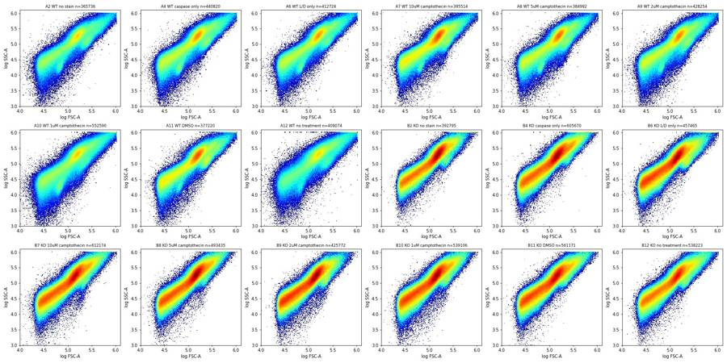
19
tool output
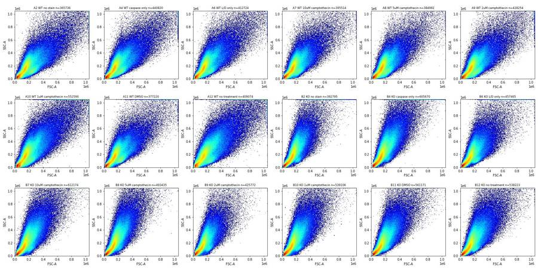
20
tool call · Read
{
"file_path": "/task/work/p_fl.png"
}21
tool output
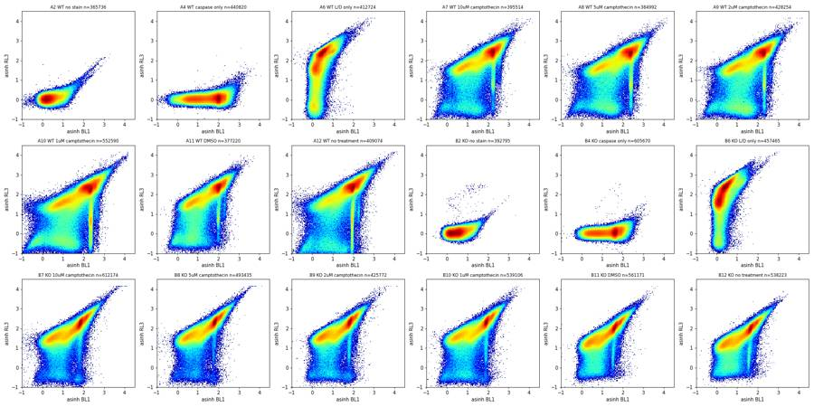
23
tool call · Read
{
"file_path": "/task/work/p_time_bl1.png"
}24
tool output
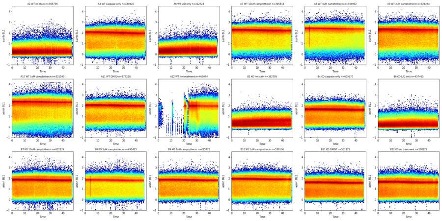
25
tool call · Read
{
"file_path": "/task/work/p_rate.png"
}26
tool output
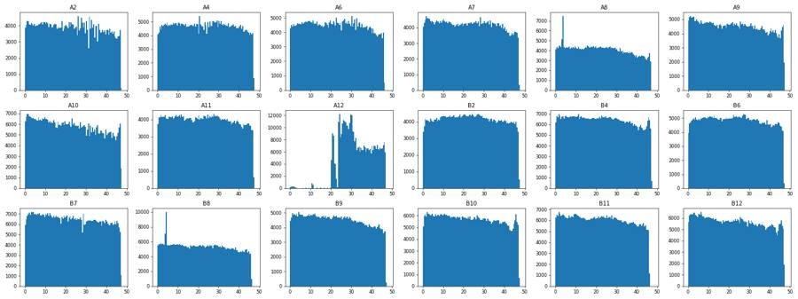
27
tool call · Read
{
"file_path": "/task/work/p_fsc_bl1.png"
}28
tool output
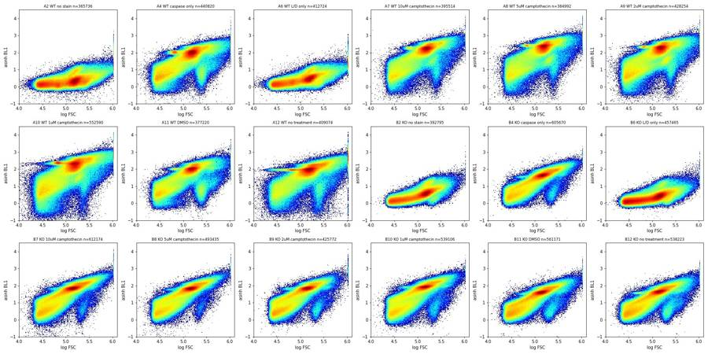
29
tool call · Read
{
"file_path": "/task/work/p_fsc_rl3.png"
}30
tool output
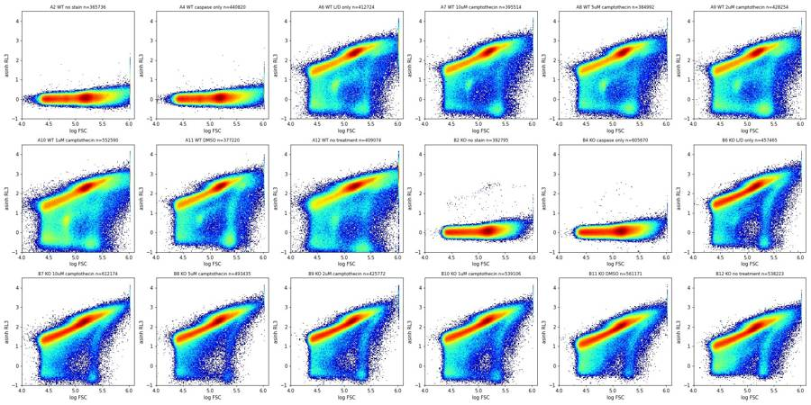
32
tool call · Bash
cd /task/work; cat > plot2.py <<'EOF'
import pickle, numpy as np, pandas as pd, matplotlib; matplotlib.use('Agg')
import matplotlib.pyplot as plt
from matplotlib.colors import LogNorm
d=pickle.load(open('d.pkl','rb'))
lay=pd.read_csv('/task/inputs/plate_layout.csv').set_index('well')
wells=list(d)
def grid(fn, xf, yf, xr, yr, xl, yl, sub=None, bins=200, norm=True):
fig,axs=plt.subplots(3,6,figsize=(24,12))
for ax,w in zip(axs.flat,wells):
df=d[w]
if sub is not None: df=sub(df)
x=xf(df); y=yf(df)
ax.hist2d(x,y,bins=bins,range=[xr,yr],norm=LogNorm() if norm else None,cmap='jet')
ax.set_title(f"{w} {lay.loc[w,'sample']} n={len(df)}",fontsize=9)
ax.set_xlabel(xl); ax.set_ylabel(yl)
plt.tight_layout(); plt.savefig(fn,dpi=70); plt.close()
al=lambda c: (lambda df: np.arcsinh(df[c]/150)/np.log(10))
lg=lambda c: (lambda df: np.log10(np.clip(df[c],1,None)))
lin=lambda c: (lambda df: df[c])
neg=lambda df: df[df['RL3-A']<600]
grid('q_scatter_rl3neg.png', lin('FSC-A'), lin('SSC-A'), [0,6e5],[0,6e5],'FSC-A','SSC-A', sub=neg, norm=False)
grid('q_scatter_rl3neg_log.png', lg('FSC-A'), lg('SSC-A'), [4,6.1],[3,6.1],'FSC-A','SSC-A', sub=neg)
grid('q_scatter_zoom.png', lin('FSC-A'), lin('SSC-A'), [0,6e5],[0,6e5],'FSC-A','SSC-A', norm=False)
big=lambda df: df[(df['FSC-A']>150000)&(df['FSC-A']<450000)]
grid('q_fl_big.png', al('BL1-A'), al('RL3-A'), [-1,4.5],[-1,4.5],'asinh BL1','asinh RL3', sub=big)
grid('q_ah_neg.png', lin('FSC-A'), lin('FSC-H'), [0,6e5],[0,4e5],'FSC-A','FSC-H', sub=neg)
grid('q_ah.png', lin('FSC-A'), lin('FSC-H'), [0,6e5],[0,4e5],'FSC-A','FSC-H')
grid('q_aw.png', lin('FSC-A'), lin('FSC-W'), [0,6e5],[0,380],'FSC-A','FSC-W',bins=[200,190])
EOF
python3 plot2.py33
tool output
(Bash completed with no output)
34
tool call · Read
{
"file_path": "/task/work/q_scatter_rl3neg_log.png"
}35
tool output
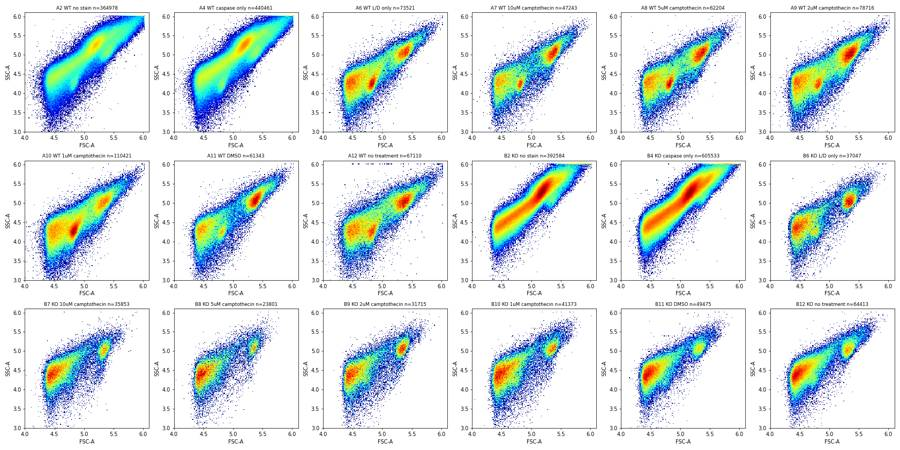
36
tool call · Read
{
"file_path": "/task/work/q_fl_big.png"
}37
tool output
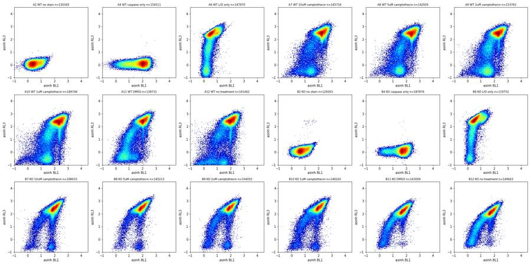
38
tool call · Read
{
"file_path": "/task/work/q_scatter_rl3neg.png"
}39
tool output
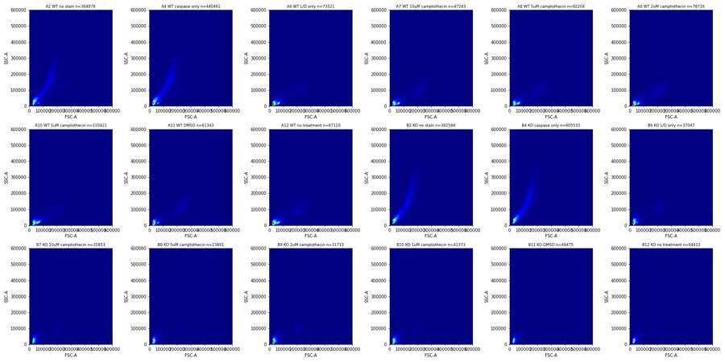
41
tool call · Read
{
"file_path": "/task/work/q_ah.png"
}42
tool output
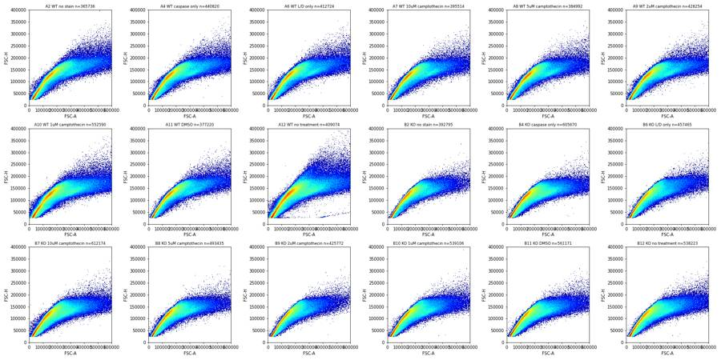
43
tool call · Read
{
"file_path": "/task/work/q_scatter_zoom.png"
}44
tool output
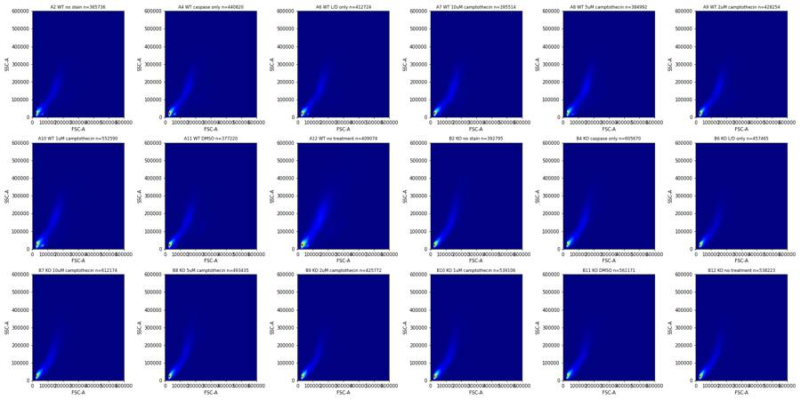
46
agent
Structure is clear now (mostly dead cells/debris, a small Zombie-negative intact-cell cluster, and a clog in A12). Next I'm quantifying thresholds for the cells/singlets/live/caspase gates.
47
tool call · Bash
cd /task/work; cat > plot3.py <<'EOF'
import pickle, numpy as np, pandas as pd, matplotlib; matplotlib.use('Agg')
import matplotlib.pyplot as plt
from matplotlib.colors import LogNorm
d=pickle.load(open('d.pkl','rb'))
lay=pd.read_csv('/task/inputs/plate_layout.csv').set_index('well')
wells=list(d)
al=lambda x: np.arcsinh(x/150)/np.log(10)
# provisional cells
def cells(df): return df[(df['FSC-A']>120000)&(df['FSC-A']<1e6)&(df['SSC-A']>30000)&(df['SSC-A']<1e6)]
fig,axs=plt.subplots(3,6,figsize=(24,12))
for ax,w in zip(axs.flat,wells):
c=cells(d[w])
ax.hist2d(c['FSC-A'],c['FSC-H']/c['FSC-A'],bins=200,range=[[1e5,1e6],[0,1.4]],norm=LogNorm(),cmap='jet'); ax.set_title(w)
plt.tight_layout(); plt.savefig('r_ratio.png',dpi=60); plt.close()
fig,axs=plt.subplots(3,6,figsize=(24,12))
for ax,w in zip(axs.flat,wells):
c=cells(d[w])
ax.hist(al(c['RL3-A']),bins=220,range=[-1.5,4.5]); ax.set_yscale('log'); ax.set_title(f"{w} {lay.loc[w,'sample']}",fontsize=9)
for v in [0.8,1.0,1.2]: ax.axvline(v,color='r',lw=0.5)
plt.tight_layout(); plt.savefig('r_rl3hist.png',dpi=60); plt.close()
fig,axs=plt.subplots(3,6,figsize=(24,12))
for ax,w in zip(axs.flat,wells):
c=cells(d[w]); l=c[c['RL3-A']<1000]
ax.hist(al(l['BL1-A']),bins=150,range=[-1,4]); ax.set_title(f"{w} {lay.loc[w,'sample']} n={len(l)}",fontsize=9)
for v in [1.0,1.2]: ax.axvline(v,color='r',lw=0.5)
plt.tight_layout(); plt.savefig('r_bl1hist_live.png',dpi=60); plt.close()
# scatter of live-ish in provisional cells: FSC vs SSC colored for RL3 neg
fig,axs=plt.subplots(3,6,figsize=(24,12))
for ax,w in zip(axs.flat,wells):
c=d[w]; l=c[(c['RL3-A']<1000)]
ax.hist2d(l['FSC-A'],l['SSC-A'],bins=150,range=[[0,7e5],[0,5e5]],norm=LogNorm(),cmap='jet'); ax.set_title(f"{w} RL3<1000 n={len(l)}",fontsize=9)
plt.tight_layout(); plt.savefig('r_scatter_neg_lin.png',dpi=60); plt.close()
fig,axs=plt.subplots(3,6,figsize=(24,12))
for ax,w in zip(axs.flat,wells):
c=d[w]; l=c[(c['RL3-A']>=3000)]
ax.hist2d(l['FSC-A'],l['SSC-A'],bins=150,range=[[0,7e5],[0,5e5]],norm=LogNorm(),cmap='jet'); ax.set_title(f"{w} RL3>3000 n={len(l)}",fontsize=9)
plt.tight_layout(); plt.savefig('r_scatter_pos_lin.png',dpi=60); plt.close()
EOF
python3 plot3.py48
tool call · Read
{
"file_path": "/task/work/r_rl3hist.png"
}49
tool call · Read
{
"file_path": "/task/work/r_bl1hist_live.png"
}50
tool call · Read
{
"file_path": "/task/work/r_scatter_neg_lin.png"
}51
tool output
(Bash completed with no output)
52
tool output
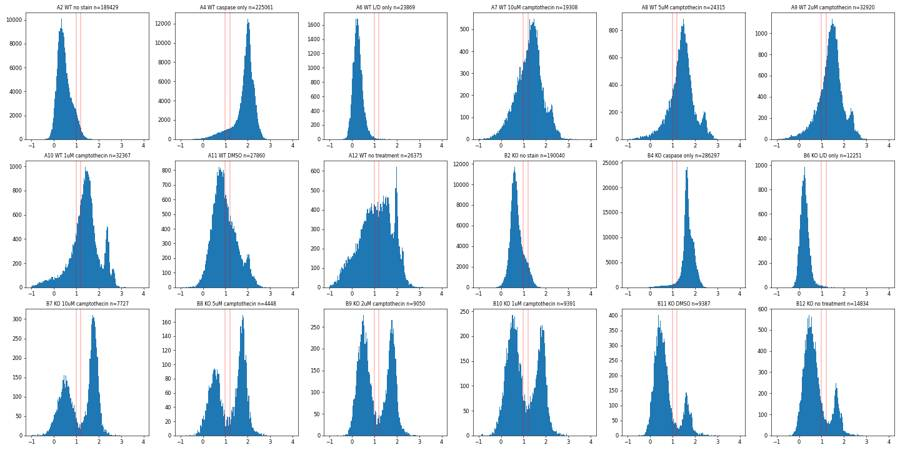
53
tool output
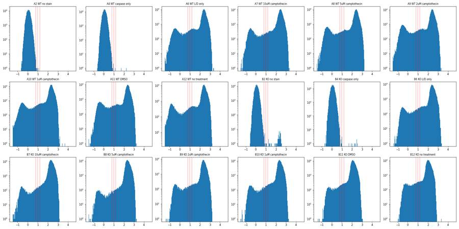
54
tool output
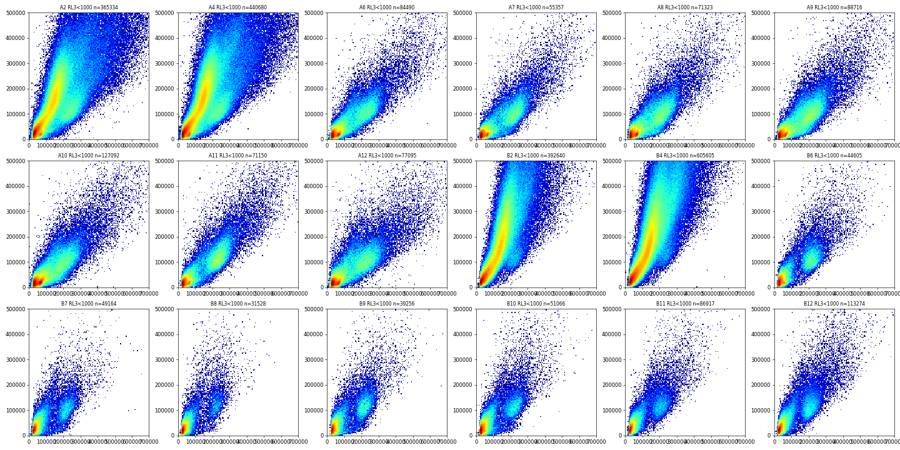
56
tool call · Read
{
"file_path": "/task/work/r_scatter_pos_lin.png"
}57
tool output
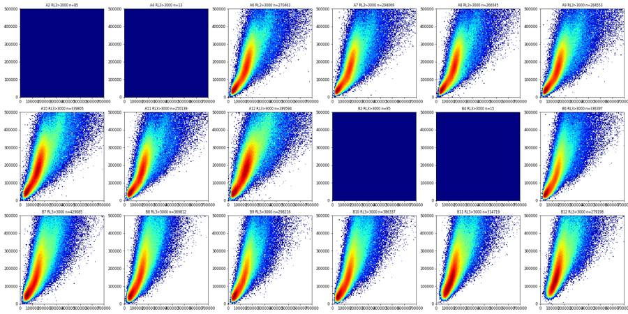
58
tool call · Read
{
"file_path": "/task/work/r_ratio.png"
}59
tool output
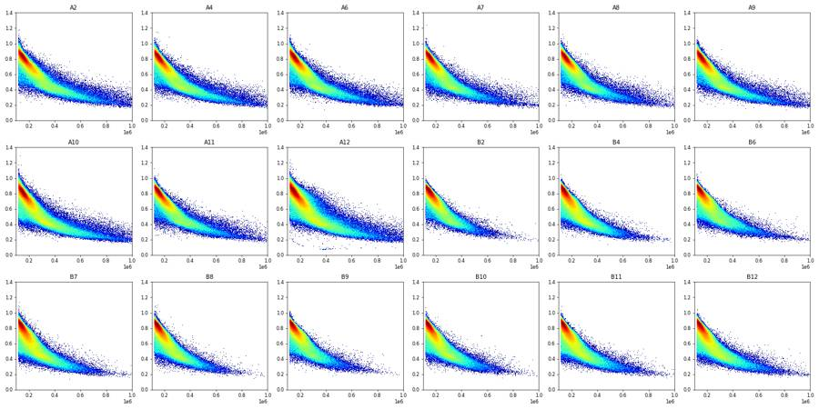
61
tool call · Bash
cd /task/work; cat > plot4.py <<'EOF'
import pickle, numpy as np, pandas as pd, matplotlib; matplotlib.use('Agg')
import matplotlib.pyplot as plt
from matplotlib.colors import LogNorm
d=pickle.load(open('d.pkl','rb'))
wells=['A6','A7','A11','B6','B7','B11']
def cells(df): return df[(df['FSC-A']>120000)&(df['FSC-A']<1e6)&(df['SSC-A']>30000)&(df['SSC-A']<1e6)]
pairs=[('FSC-A','FSC-H',[1e5,7e5],[0,3.5e5]),('FSC-A','FSC-W',[1e5,7e5],[40,300]),('SSC-A','SSC-H',[0,7e5],[0,5e5]),('SSC-A','SSC-W',[0,7e5],[20,300]),('FSC-H','FSC-W',[0,3.5e5],[40,300])]
for sub,name in [(lambda c:c,'all'),(lambda c:c[c['RL3-A']<1000],'neg')]:
fig,axs=plt.subplots(len(pairs),6,figsize=(24,4*len(pairs)))
for j,w in enumerate(wells):
c=sub(cells(d[w]))
for i,(x,y,xr,yr) in enumerate(pairs):
ax=axs[i,j]
b=[150, int(yr[1]-yr[0]) if 'W' in y else 150]
ax.hist2d(c[x],c[y],bins=b,range=[xr,yr],norm=LogNorm(),cmap='jet'); ax.set_title(f'{w} {name} {x} vs {y}',fontsize=9)
plt.tight_layout(); plt.savefig(f's_singlet_{name}.png',dpi=60); plt.close()
EOF
python3 plot4.py62
tool call · Read
{
"file_path": "/task/work/s_singlet_all.png"
}63
tool call · Read
{
"file_path": "/task/work/s_singlet_neg.png"
}64
tool output
(Bash completed with no output)
65
tool output
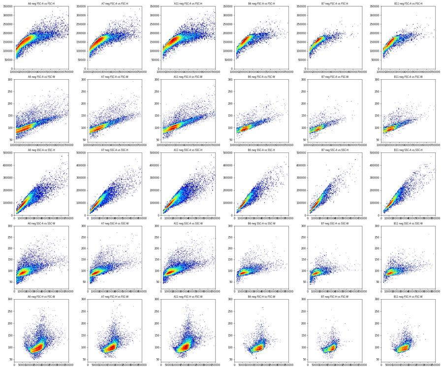
66
tool output
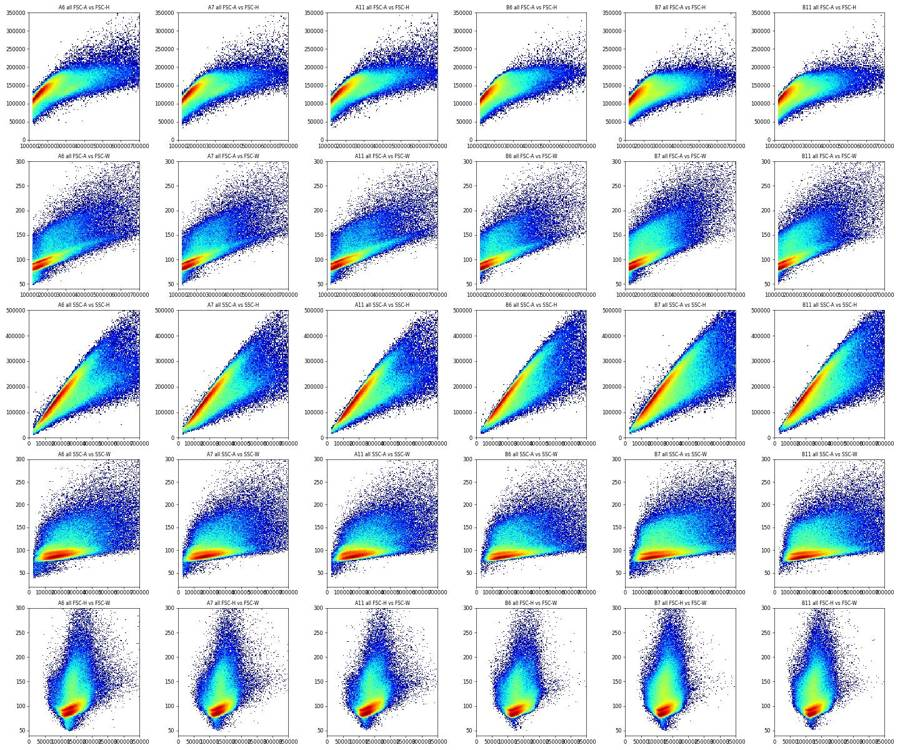
68
tool call · Bash
cd /task/work; cat > q5.py <<'EOF'
import pickle, numpy as np, pandas as pd
d=pickle.load(open('d.pkl','rb'))
np.set_printoptions(linewidth=250)
edges=np.arange(20000,420001,20000)
print('FSC-A hist of RL3<1000 events (stained wells), bins of 20k from 20k')
for w in ['A6','A7','A8','A9','A10','A11','A12','B6','B7','B8','B9','B10','B11','B12']:
df=d[w]; n=df[df['RL3-A']<1000]
h,_=np.histogram(n['FSC-A'],edges); print(w,h)
print('SSC-A percentiles of RL3<1000 with FSC 130-400k')
for w in ['A6','A7','A11','B6','B7','B11']:
df=d[w]; n=df[(df['RL3-A']<1000)&(df['FSC-A']>130000)&(df['FSC-A']<400000)]
print(w,np.percentile(n['SSC-A'],[0.5,1,5,50,95,99,99.5]).round(0), np.percentile(n['FSC-A'],[5,50,95,99]).round(0))
print('FSC-W band by FSC-A bin (all stained cells): p2,p10,p50,p75,p90')
for w in ['A7','A11','B7','B11']:
df=d[w]; c=df[(df['FSC-A']>120000)&(df['FSC-A']<1e6)]
for lo in range(120000,720000,60000):
s=c[(c['FSC-A']>=lo)&(c['FSC-A']<lo+60000)]['FSC-W']
# mode
hh=np.bincount(s.astype(int),minlength=400);
print(w,lo,len(s),'mode',hh.argmax(),np.percentile(s,[2,10,50,75,90]).round(0))
EOF
python3 q5.py69
tool output
FSC-A hist of RL3<1000 events (stained wells), bins of 20k from 20k A6 [25846 13685 12265 5041 2986 2392 2151 2297 2411 2479 2395 2462 1936 1323 865 618 401 337 282 264] A7 [16320 8354 6521 2364 1735 1453 1555 1901 2162 2489 2477 2157 1605 971 625 442 303 287 218 224] A8 [19067 10912 9685 3734 2549 2323 2454 2870 3271 3148 2761 2250 1596 1088 706 414 323 308 248 242] A9 [24010 13095 9752 4276 3160 3020 3344 3815 4357 4230 3715 3088 2161 1509 940 607 509 384 338 307] A10 [35741 21664 21895 8300 4976 4059 3773 4210 4266 3522 3101 2381 1799 1195 872 627 533 419 384 326] A11 [21330 10400 6567 2730 1771 1414 1460 1742 2394 3277 4002 3652 2815 1765 1089 724 510 452 397 363] A12 [19485 12611 9885 4175 2772 2335 2306 2444 2733 2701 2839 2398 1976 1389 1022 792 529 431 416 389] B6 [17620 8378 3688 1617 899 597 512 1020 1835 2216 1941 1375 828 504 299 215 170 150 148 103] B7 [24770 9286 3657 1784 1125 754 621 792 1239 1452 1268 813 467 243 109 70 69 47 55 48] B8 [16408 6262 2321 1118 696 453 370 357 566 836 805 531 265 161 81 53 31 27 17 18] B9 [16541 7584 3107 1592 1046 735 582 810 1386 1697 1590 998 615 249 153 105 84 73 51 52] B10 [23152 10485 4189 2165 1287 821 730 901 1195 1458 1425 1149 697 396 243 140 111 98 80 66] B11 [54926 14143 4725 2173 1297 797 745 1162 1524 1469 1276 733 474 312 186 151 131 115 92 68] B12 [67459 19930 5971 2911 1806 1092 900 1546 2479 2388 1959 1229 743 492 346 300 278 228 218 173] SSC-A percentiles of RL3<1000 with FSC 130-400k A6 [ 18767. 25472. 45998. 117527. 241746. 332615. 367935.] [139242. 220505. 338778. 384674.] A7 [ 15604. 19455. 39270. 111707. 243817. 334280. 371289.] [142407. 221073. 334075. 382931.] A11 [ 22223. 30350. 60716. 125138. 259135. 348290. 392258.] [148147. 234984. 343945. 387069.] B6 [ 28310. 38290. 68403. 124267. 282966. 405709. 459071.] [152384. 218769. 329731. 384320.] B7 [ -9950. 10625. 30135. 113164. 252724. 369344. 418106.] [141197. 211140. 296180. 369668.] B11 [ 31947. 45692. 72264. 135743. 303512. 444774. 507950.] [141489. 207250. 325752. 380317.] FSC-W band by FSC-A bin (all stained cells): p2,p10,p50,p75,p90 A7 120000 112333 mode 85 [77. 81. 88. 94. 98.] A7 180000 49151 mode 100 [ 86. 89. 99. 106. 128.] A7 240000 20007 mode 109 [ 95. 99. 113. 135. 160.] A7 300000 11423 mode 117 [104. 111. 135. 160. 179.] A7 360000 6717 mode 129 [113. 121. 150. 177. 198.] A7 420000 4216 mode 133 [121. 129. 161. 190. 213.] A7 480000 2731 mode 144 [128. 137. 171. 204. 232.] A7 540000 1852 mode 152 [135. 143. 184. 217. 248.] A7 600000 1312 mode 148 [140. 150. 195. 230. 264.] A7 660000 1008 mode 159 [145. 155. 205. 244. 279.] A11 120000 99770 mode 84 [77. 81. 88. 93. 97.] A11 180000 46542 mode 100 [ 86. 90. 99. 105. 123.] A11 240000 21816 mode 109 [ 94. 99. 110. 124. 154.] A11 300000 11502 mode 116 [104. 110. 127. 154. 175.] A11 360000 7310 mode 126 [112. 119. 139. 169. 190.] A11 420000 4959 mode 134 [120. 127. 149. 181. 203.] A11 480000 3273 mode 141 [126. 135. 158. 194. 220.] A11 540000 2246 mode 149 [133. 142. 173. 207. 235.] A11 600000 1584 mode 157 [138. 147. 186. 222. 252.] A11 660000 1162 mode 162 [142. 153. 194. 231. 258.] B7 120000 143043 mode 84 [ 77. 80. 88. 94. 104.] B7 180000 55398 mode 101 [ 87. 91. 102. 120. 147.] B7 240000 27223 mode 109 [ 97. 102. 123. 150. 170.] B7 300000 14819 mode 122 [107. 115. 145. 170. 190.] B7 360000 8429 mode 128 [116. 125. 161. 188. 212.] B7 420000 5009 mode 139 [124. 135. 178. 206. 234.] B7 480000 3136 mode 152 [133. 144. 191. 224. 255.] B7 540000 1949 mode 148 [139. 152. 205. 239. 273.] B7 600000 1311 mode 210 [146. 158. 215. 254. 286.] B7 660000 847 mode 174 [152. 169. 233. 270. 308.] B11 120000 127045 mode 84 [ 78. 81. 88. 94. 104.] B11 180000 47472 mode 100 [ 87. 91. 103. 122. 147.] B11 240000 21817 mode 110 [ 97. 103. 124. 151. 170.] B11 300000 12420 mode 123 [107. 115. 144. 170. 191.] B11 360000 7042 mode 128 [116. 124. 159. 187. 211.] B11 420000 4218 mode 135 [124. 133. 171. 201. 230.] B11 480000 2563 mode 143 [131. 141. 185. 218. 250.] B11 540000 1628 mode 155 [141. 149. 197. 232. 267.] B11 600000 1112 mode 168 [145. 156. 208. 243. 283.] B11 660000 737 mode 218 [150. 161. 218. 253. 295.]
71
agent
Gate boundaries are now pinned down from the data; building the FlowKit gating strategy and computing counts next.
72
tool call · Bash
cd /task/work; cat > q6.py <<'EOF'
import pickle, numpy as np, pandas as pd
d=pickle.load(open('d.pkl','rb'))
np.set_printoptions(linewidth=250, suppress=True)
def cells(df): return df[(df['FSC-A']>130000)&(df['FSC-A']<600000)&(df['SSC-A']>20000)&(df['SSC-A']<600000)]
def sing(c):
m=62+0.000155*c['FSC-A']; return c[(c['FSC-W']<m+15)&(c['FSC-W']>m-20)]
print('FMO RL3 (no Zombie wells) in singlets: p99, p99.9, p99.99, max')
for w in ['A2','A4','B2','B4']:
s=sing(cells(d[w])); print(w,len(s),np.percentile(s['RL3-A'],[1,50,99,99.9,99.99]).round(0),s['RL3-A'].max(), (s['RL3-A']>700).sum())
print('FMO BL1 (no caspase wells) live singlets')
for w in ['A2','B2','A6','B6']:
s=sing(cells(d[w]));
if w in('A6','B6'): s=s[s['RL3-A']<700]
print(w,len(s),np.percentile(s['BL1-A'],[1,50,95,99,99.5,99.9]).round(0),[(s['BL1-A']>t).mean().round(4)*100 for t in (800,1000,1100,1200,1500)])
al=lambda x: np.arcsinh(x/150)/np.log(10)
print('BL1 hist (asinh bins 0.1 from -0.5..3) of live singlets')
for w in ['A7','A8','A9','A10','A11','A12','B7','B8','B9','B10','B11','B12']:
s=sing(cells(d[w])); l=s[s['RL3-A']<700]
h,e=np.histogram(al(l['BL1-A']),np.arange(-0.5,3.01,0.1)); print(w,len(s),len(l),h)
print('RL3 hist (asinh) of singlets')
for w in ['A6','A7','A11','B6','B7','B11','B12']:
s=sing(cells(d[w]))
h,e=np.histogram(al(s['RL3-A']),np.arange(-1.5,3.51,0.1)); print(w,h)
print([ (round(x,1), int(150*np.sinh(x*np.log(10)))) for x in np.arange(0.5,1.6,0.1)])
EOF
python3 q6.py73
tool output
FMO RL3 (no Zombie wells) in singlets: p99, p99.9, p99.99, max
A2 133428 [-104. 25. 162. 218. 283.] 1385.0 1
A4 156772 [-103. 25. 162. 213. 278.] 13534.0 1
B2 137401 [ -98. 29. 174. 245. 19930.] 28460.0 43
B4 178872 [-98. 29. 172. 231. 321.] 27097.0 6
FMO BL1 (no caspase wells) live singlets
A2 133428 [ -32. 147. 749. 1184. 1364. 1823.] [4.17, 1.95, 1.37, 0.9199999999999999, 0.29]
B2 137401 [ 29. 310. 1233. 1863. 2106. 2645.] [11.450000000000001, 8.03, 6.63, 5.4, 2.6599999999999997]
A6 18771 [ -59. 83. 263. 490. 694. 1981.] [0.37, 0.24, 0.22, 0.18, 0.13999999999999999]
B6 10324 [ -51. 81. 241. 485. 703. 1320.] [0.43, 0.27, 0.19, 0.13, 0.05]
BL1 hist (asinh bins 0.1 from -0.5..3) of live singlets
A7 150154 16516 [ 29 53 56 88 125 168 216 272 369 390 532 584 728 796 802 925 1028 1262 1392 1408 1268 1141 719 566 367 299 244 248 165 95 59 42 10 11 3]
A8 150313 20598 [ 35 50 60 73 76 104 142 177 202 280 357 395 562 711 756 1030 1255 1625 1962 2274 2130 1797 1319 911 524 399 268 225 254 270 146 84 43 20 8]
A9 157234 27549 [ 47 80 82 83 116 138 200 223 285 367 488 622 692 911 1130 1341 1641 2159 2663 2935 2742 2504 1800 1198 746 544 357 367 423 266 153 111 37 12 7]
A10 175525 23913 [ 137 163 162 181 215 196 222 233 280 360 476 512 648 826 1005 1242 1534 1833 2127 2336 2190 1795 1260 793 542 394 299 304 504 370 135 139 82 15 4]
A11 147833 23689 [ 14 26 55 134 196 330 555 842 1054 1503 1770 2112 2221 2051 1879 1467 1216 1066 980 851 735 568 449 354 369 361 207 132 87 39 30 11 4 2 2]
A12 147474 20110 [ 246 322 325 426 399 448 516 540 658 823 856 979 1020 1038 941 921 857 881 954 1092 1068 1011 653 581 793 515 294 248 130 76 41 29 13 5 1]
B7 152828 6479 [ 13 15 36 64 107 163 215 268 309 387 350 308 215 158 119 68 43 65 103 161 308 632 786 690 477 234 82 35 20 13 4 2 4 1 1]
B8 143541 3703 [ 1 5 13 19 46 73 109 170 199 224 237 207 152 90 65 50 46 55 78 142 197 328 395 346 231 108 55 24 15 9 4 3 1 1 0]
B9 110641 7719 [ 0 1 8 29 81 194 288 483 567 704 675 558 340 237 141 97 63 73 108 192 307 512 640 598 449 206 75 36 25 14 11 2 3 1 0]
B10 144109 7839 [ 5 17 39 86 139 214 319 456 522 606 617 555 430 306 201 152 93 105 152 216 271 400 504 524 450 230 107 46 22 22 11 6 5 2 2]
B11 133572 7329 [ 1 2 11 63 152 361 542 836 995 989 835 689 447 259 138 54 51 42 41 86 134 203 165 116 37 31 11 7 13 6 5 2 1 1 1]
B12 142395 11688 [ 1 6 33 95 264 475 775 1134 1365 1468 1387 1102 841 545 307 185 108 84 114 148 223 376 289 166 84 30 30 19 11 10 8 3 1 1 0]
RL3 hist (asinh) of singlets
A6 [ 10 9 18 46 109 252 468 877 1321 1615 1776 1590 1310 1097 901 735 757 634 614 661 696 790 807 952 962 1116 1228 1248 1222 1142 982 779 723 699 1006 2441 7572 18101 28398 29099 20188
9299 3854 1398 134 6 0 0 1 0]
A7 [ 2 2 19 30 66 214 489 997 1505 1816 1727 1360 1181 869 709 592 530 502 497 500 521 608 617 658 691 769 759 820 854 859 795 767 871 1025 1367 2339 5240 12194 23696 31125 25939
14313 6312 2612 722 57 3 0 0 0]
A11 [ 3 1 5 13 19 71 215 565 1271 1965 2283 2289 2183 1764 1445 1232 1034 973 889 899 867 901 927 1084 1093 1110 1152 1214 1185 1119 906 829 804 818 1337 3169 8622 18708 28411 26628 16346
7192 3180 1009 98 1 0 0 0 0]
B6 [ 2 1 4 3 10 38 195 430 769 970 895 772 645 539 424 402 389 377 425 417 482 505 528 642 644 759 741 816 850 842 813 742 582 589 720 1230 4003 12813 22944 23973 18221
11532 6283 2818 730 49 2 0 0 0]
B7 [ 4 4 10 20 28 74 184 417 604 627 504 389 351 253 249 183 212 201 193 255 260 345 338 417 439 482 512 524 548 616 653 752 862 1185 2222 7102 19428 30706 30621 23531 14746
7933 3260 543 24 0 0 0 0 0]
B11 [ 1 0 1 0 0 0 5 29 102 266 441 524 505 478 406 385 375 383 433 409 445 486 545 626 657 696 715 677 652 624 623 762 1526 5649 17444 27970 26757 19840 12158 6705 2750
496 23 1 0 0 0 0 0 0]
B12 [ 0 0 0 0 0 0 1 15 76 262 538 811 892 841 858 707 727 657 652 711 720 787 856 854 961 925 866 807 736 705 769 1300 4472 14711 26699 28490 22742 14531 8154 3633 897
32 0 0 0 0 0 0 0 0]
[(0.5, 213), (0.6, 279), (0.7, 360), (0.8, 461), (0.9, 586), (1.0, 742), (1.1, 938), (1.2, 1183), (1.3, 1492), (1.4, 1880), (1.5, 2369)]75
tool call · Bash
cd /task/work; cat > q7.py <<'EOF'
import pickle, numpy as np, pandas as pd
d=pickle.load(open('d.pkl','rb'))
allc=pd.concat([d[w] for w in ['A7','A11','B7','B11','A9','B9']])
c=allc[(allc['FSC-A']>110000)&(allc['FSC-A']<640000)]
for lo in range(110000,640000,30000):
s=c[(c['FSC-A']>=lo)&(c['FSC-A']<lo+30000)]['FSC-W'].astype(int)
hh=np.bincount(s,minlength=400); sm=np.convolve(hh,np.ones(5)/5,'same'); mo=sm.argmax()
# half-max bounds
hm=sm[mo]/2; l=mo;
while sm[l]>hm: l-=1
r=mo
while sm[r]>hm: r+=1
# 10% max bounds
tm=sm[mo]/10; l2=mo
while sm[l2]>tm: l2-=1
r2=mo
while sm[r2]>tm and r2<399: r2+=1
print(lo+15000,len(s),'mode',mo,'FWHM',l,r,'10%',l2,r2)
EOF
python3 q7.py76
tool output
125000 357350 mode 81 FWHM 77 93 10% 74 96 155000 357042 mode 85 FWHM 81 98 10% 78 101 185000 216086 mode 90 FWHM 85 103 10% 82 109 215000 125699 mode 103 FWHM 89 108 10% 86 144 245000 84081 mode 107 FWHM 94 113 10% 90 168 275000 59555 mode 111 FWHM 99 119 10% 94 179 305000 44116 mode 115 FWHM 105 125 10% 99 189 335000 33149 mode 120 FWHM 109 135 10% 103 198 365000 25329 mode 125 FWHM 114 139 10% 107 211 395000 19713 mode 128 FWHM 118 141 10% 111 221 425000 15507 mode 132 FWHM 123 144 10% 115 234 455000 12487 mode 135 FWHM 127 147 10% 118 241 485000 9894 mode 139 FWHM 130 155 10% 121 255 515000 7937 mode 141 FWHM 133 157 10% 125 267 545000 6311 mode 145 FWHM 136 160 10% 128 277 575000 5195 mode 151 FWHM 140 168 10% 130 280 605000 4409 mode 152 FWHM 142 191 10% 131 290 635000 2547 mode 156 FWHM 143 235 10% 134 298
78
agent
Writing the final gating strategy now and generating counts.
79
tool call · Bash
cd /task/work; cat > gate.py <<'EOF'
import flowkit as fk, numpy as np, pandas as pd
from flowkit import Dimension, GatingStrategy, gates, transforms
OUT='/task/outputs/'
lay=pd.read_csv('/task/inputs/plate_layout.csv')
RL3_LIVE_MAX=500.0 # raw RL3-A units
BL1_POS_MIN=1100.0 # raw BL1-A units
def build():
gs=GatingStrategy()
xf=transforms.LogicleTransform(param_t=1048576, param_w=1.0, param_m=4.5, param_a=0)
gs.add_transform('logicle', xf)
T=lambda v: float(xf.apply(np.array([v],dtype=float))[0])
U='uncompensated'
# cells: cell-sized events on scatter, excluding debris and off-scale aggregates
cells=gates.PolygonGate('cells',[Dimension('FSC-A',U),Dimension('SSC-A',U)],
[(130000,20000),(130000,350000),(300000,600000),(600000,600000),(600000,150000),(300000,40000),(200000,20000)])
gs.add_gate(cells,('root',))
# singlets: main FSC-W vs FSC-A band
L=lambda a: 71+0.00013*(a-125000); Uu=lambda a: 99+0.000165*(a-125000)
sing=gates.PolygonGate('singlets',[Dimension('FSC-A',U),Dimension('FSC-W',U)],
[(120000,L(120000)),(120000,Uu(120000)),(620000,Uu(620000)),(620000,L(620000))])
gs.add_gate(sing,('root','cells'))
live=gates.RectangleGate('live',[Dimension('RL3-A',U,transformation_ref='logicle',range_min=None,range_max=T(RL3_LIVE_MAX))])
gs.add_gate(live,('root','cells','singlets'))
dead=gates.RectangleGate('dead',[Dimension('RL3-A',U,transformation_ref='logicle',range_min=T(RL3_LIVE_MAX),range_max=None)])
gs.add_gate(dead,('root','cells','singlets'))
pos=gates.RectangleGate('casp37_pos',[Dimension('BL1-A',U,transformation_ref='logicle',range_min=T(BL1_POS_MIN),range_max=None)])
gs.add_gate(pos,('root','cells','singlets','live'))
return gs
ROLE={'cells':'cells','singlets':'singlets','live':'live','casp37_pos':'marker_positive','dead':'other'}
PARENT={'cells':'all_events','singlets':'cells','live':'singlets','dead':'singlets','casp37_pos':'live'}
ORDER=['cells','singlets','live','dead','casp37_pos']
def counts(gs):
rows=[]
for _,r in lay.iterrows():
s=fk.Sample('/task/inputs/raw/'+r.file, ignore_offset_error=True)
res=gs.gate_sample(s)
n={'all_events':s.event_count}
for g in ORDER: n[g]=int(res.get_gate_membership(g).sum())
rep=res.report.set_index('gate_name')
for g in ORDER: assert int(rep.loc[g,'count'])==n[g]
rows.append(dict(file=r.file,well=r.well,population='all_events',role='other',parent='none',count=n['all_events'],pct_of_parent=''))
for g in ORDER:
p=n[PARENT[g]]
rows.append(dict(file=r.file,well=r.well,population=g,role=ROLE[g],parent=PARENT[g],count=n[g],pct_of_parent=(100*n[g]/p if p else '')))
return pd.DataFrame(rows)
if __name__=='__main__':
gs=build()
with open(OUT+'gates.xml','wb') as f: fk.export_gatingml(gs,f)
gs2=fk.parse_gating_xml(OUT+'gates.xml')
print(gs2.get_gate_ids())
c=counts(gs2)
c.to_csv(OUT+'counts.csv',index=False)
p=c.pivot(index='well',columns='population',values='count').loc[lay.well,['all_events']+ORDER]
p['cells%']=100*p.cells/p.all_events; p['sing%']=100*p.singlets/p.cells; p['live%']=100*p.live/p.singlets; p['casp%']=100*p.casp37_pos/p.live
p['sample']=lay.set_index('well')['sample']
print(p.round(2).to_string())
EOF
python3 gate.py80
tool output
[('cells', ('root',)), ('singlets', ('root', 'cells')), ('live', ('root', 'cells', 'singlets')), ('casp37_pos', ('root', 'cells', 'singlets', 'live')), ('dead', ('root', 'cells', 'singlets'))]
population all_events cells singlets live dead casp37_pos cells% sing% live% casp% sample
well
A2 365736 164590 134544 134541 3 1740 45.00 81.74 100.00 1.29 WT no stain
A4 440820 196910 158538 158537 1 140496 44.67 80.51 100.00 88.62 WT caspase only
A6 412724 185669 150736 17449 133287 37 44.99 81.19 11.58 0.21 WT L/D only
A7 395514 185923 152341 15678 136663 9050 47.01 81.94 10.29 57.72 WT 10uM camptothecin
A8 384992 182333 151944 19428 132516 13823 47.36 83.33 12.79 71.15 WT 5uM camptothecin
A9 428254 196243 158850 26190 132660 18538 45.82 80.95 16.49 70.78 WT 2uM camptothecin
A10 552590 237405 176108 22220 153888 14439 42.96 74.18 12.62 64.98 WT 1uM camptothecin
A11 377220 177083 149384 22330 127054 6082 46.94 84.36 14.95 27.24 WT DMSO
A12 409074 197861 147257 18418 128839 7865 48.37 74.42 12.51 42.70 WT no treatment
B2 392795 158779 135026 134979 47 8025 40.42 85.04 99.97 5.95 KO no stain
B4 605670 232256 176864 176856 8 167778 38.35 76.15 100.00 94.87 KO caspase only
B6 457465 155437 122809 9478 113331 18 33.98 79.01 7.72 0.19 KO L/D only
B7 612174 211146 152892 5871 147021 3320 34.49 72.41 3.84 56.55 KO 10uM camptothecin
B8 493435 178368 140976 3366 137610 1867 36.15 79.04 2.39 55.47 KO 5uM camptothecin
B9 425772 135596 109723 7046 102677 3056 31.85 80.92 6.42 43.37 KO 2uM camptothecin
B10 539106 184622 142703 7162 135541 2843 34.25 77.29 5.02 39.70 KO 1uM camptothecin
B11 561171 182263 133527 6467 127060 721 32.48 73.26 4.84 11.15 KO DMSO
B12 538223 186913 142104 10459 131645 1310 34.73 76.03 7.36 12.53 KO no treatment82
tool call · Bash
cd /task/work; cat > diag.py <<'EOF'
import pickle, numpy as np, pandas as pd, flowkit as fk
from matplotlib.path import Path
d=pickle.load(open('d.pkl','rb'))
lay=pd.read_csv('/task/inputs/plate_layout.csv').set_index('well')
pd.set_option('display.width',250)
cp=Path([(130000,20000),(130000,350000),(300000,600000),(600000,600000),(600000,150000),(300000,40000),(200000,20000)])
L=lambda a: 71+0.00013*(a-125000); U=lambda a: 99+0.000165*(a-125000)
def masks(df, rl=500, bl=1100):
c=cp.contains_points(df[['FSC-A','SSC-A']].values)
a=df['FSC-A'].values; w=df['FSC-W'].values
s=c&(a>120000)&(a<620000)&(w>L(a))&(w<U(a))
l=s&(df['RL3-A'].values<rl)
p=l&(df['BL1-A'].values>=bl)
return c,s,l,p
rows=[]
for w,df in d.items():
c,s,l,p=masks(df)
t=df['Time'].values
r=dict(well=w,sample=lay.loc[w,'sample'],n=len(df))
# rate stats in 1 s bins
h,_=np.histogram(t,np.arange(0,47.01,1.0)); med=np.median(h)
r['rate_med']=med; r['rate_min']=h.min(); r['rate_max']=h.max(); r['bins_lt50pct']=(h<0.5*med).sum(); r['bins_gt150pct']=(h>1.5*med).sum()
r['ev_first20s%']=100*(t<20).mean()
r['fsc_sat%']=100*(df['FSC-A']>=1048575).mean(); r['ssc_sat%']=100*(df['SSC-A']>=1048575).mean()
r['bl1_sat']=(df['BL1-A']>=1048575).sum(); r['rl3_sat']=(df['RL3-A']>=1048575).sum()
for nm,m in [('h1',t<23.5),('h2',t>=23.5)]:
r['casp_'+nm]=100*(p&m).sum()/max((l&m).sum(),1); r['live_'+nm]=100*(l&m).sum()/max((s&m).sum(),1)
# sensitivity
for rl in (300,1000):
c2,s2,l2,p2=masks(df,rl=rl); r[f'casp_rl{rl}']=100*p2.sum()/l2.sum(); r[f'live_rl{rl}']=100*l2.sum()/s2.sum()
for bl in (800,1500,2000):
c2,s2,l2,p2=masks(df,bl=bl); r[f'casp_bl{bl}']=100*p2.sum()/l2.sum()
lv=df[l]; r['live_BL1_med']=np.median(lv['BL1-A']); dd=df[s&~l&(df['RL3-A']>3000)]; r['dead_BL1_med']=np.median(dd['BL1-A']); r['dead_casp%']=100*(dd['BL1-A']>=1100).mean()
r['all_sing_casp%']=100*(df[s]['BL1-A']>=1100).mean()
rows.append(r)
R=pd.DataFrame(rows).set_index('well'); R.to_csv('diag.csv')
print(R.round(2).T.to_string())
# A12 detail
df=d['A12']; t=df['Time'].values
h,_=np.histogram(t,np.arange(0,48,1.0)); print('A12 events per s:',h)
for lo,hi in [(0,20),(20,28),(28,48)]:
m=(t>=lo)&(t<hi); c,s,l,p=masks(df); print('A12',lo,hi,'n',m.sum(),'cells',(c&m).sum(),'sing',(s&m).sum(),'live',(l&m).sum(),'casp%',round(100*(p&m).sum()/max((l&m).sum(),1),1),'live%',round(100*(l&m).sum()/max((s&m).sum(),1),1), 'sing%',round(100*(s&m).sum()/max((c&m).sum(),1),1))
for w in ['A8','B8']:
df=d[w]; t=df['Time'].values; h,_=np.histogram(t,np.arange(0,10,0.25)); print(w,'events per 0.25s first 10 s:',h)
c,s,l,p=masks(df); m=(t>=3)&(t<4.5); print(w,'burst window casp%',round(100*(p&m).sum()/max((l&m).sum(),1),1),'outside',round(100*(p&~m).sum()/max((l&~m).sum(),1),1), 'live n in window',(l&m).sum())
for w in ['A2','A7']:
s=fk.Sample('/task/inputs/raw/'+lay.loc[w,'file'],ignore_offset_error=True); print(w,'coincident',s.get_metadata().get('#coincidentcount'))
EOF
python3 diag.py83
tool output
/usr/local/lib/python3.12/site-packages/numpy/core/fromnumeric.py:3504: RuntimeWarning: Mean of empty slice. return _methods._mean(a, axis=axis, dtype=dtype, /usr/local/lib/python3.12/site-packages/numpy/core/_methods.py:129: RuntimeWarning: invalid value encountered in scalar divide ret = ret.dtype.type(ret / rcount) well A2 A4 A6 A7 A8 A9 A10 A11 A12 B2 B4 B6 B7 B8 B9 B10 B11 B12 sample WT no stain WT caspase only WT L/D only WT 10uM camptothecin WT 5uM camptothecin WT 2uM camptothecin WT 1uM camptothecin WT DMSO WT no treatment KO no stain KO caspase only KO L/D only KO 10uM camptothecin KO 5uM camptothecin KO 2uM camptothecin KO 1uM camptothecin KO DMSO KO no treatment n 365736 440820 412724 395514 384992 428254 552590 377220 409074 392795 605670 457465 612174 493435 425772 539106 561171 538223 rate_med 7948.0 9483.0 9114.0 8532.0 8485.0 9108.0 11810.0 8127.0 12583.0 8365.0 13169.0 9902.0 12993.0 10804.0 9332.0 11626.0 12408.0 11432.0 rate_min 6514 8227 545 7027 6222 7638 9391 6752 0 7075 10957 8167 10938 929 7434 9447 1149 9237 rate_max 8559 10043 9741 9212 12591 10328 13883 8473 22923 8910 13619 10556 14304 15521 9932 12446 13143 12807 bins_lt50pct 0 0 1 0 0 0 0 0 21 0 0 0 0 1 0 0 1 0 bins_gt150pct 0 0 0 0 0 0 0 0 7 0 0 0 0 0 0 0 0 0 ev_first20s% 44.19 42.88 44.39 43.8 45.78 44.4 45.86 43.41 0.69 42.77 43.97 43.25 44.48 45.89 44.9 44.29 44.98 44.71 fsc_sat% 1.27 0.69 0.78 0.34 0.49 0.6 1.27 0.35 1.42 0.04 0.04 0.09 0.1 0.09 0.06 0.08 0.09 0.14 ssc_sat% 1.6 0.96 1.14 0.59 0.8 0.87 1.78 0.6 2.03 0.45 0.54 0.43 0.61 0.68 0.35 0.53 0.55 0.75 bl1_sat 0 0 0 1 5 1 30 0 1 0 0 0 0 0 0 0 0 0 rl3_sat 0 0 8 1 5 7 4 0 4 0 0 3 28 19 10 4 1 0 casp_h1 1.23 88.88 0.1 58.33 71.62 71.07 65.16 27.66 44.88 5.63 94.96 0.19 57.22 55.21 44.14 39.34 11.68 12.92 live_h1 100.0 100.0 11.89 10.59 13.27 16.95 12.92 14.75 12.51 99.98 100.0 7.89 4.0 2.48 6.54 4.91 4.78 7.58 casp_h2 1.36 88.38 0.34 57.08 70.58 70.47 64.76 26.84 42.52 6.23 94.78 0.19 55.86 55.76 42.59 40.03 10.62 12.1 live_h2 100.0 100.0 11.24 9.99 12.24 16.01 12.27 15.14 12.51 99.95 99.99 7.55 3.69 2.29 6.31 5.13 4.9 7.14 casp_rl300 1.29 88.62 0.22 57.4 70.91 70.36 64.35 26.32 41.99 5.94 … [4,545 more characters not shown]
85
tool call · Skill
{
"skill": "dataviz"
}86
tool output
Launching skill: dataviz
87
tool call · Bash
cd /task/work; cat > sens.py <<'EOF'
import pickle, numpy as np, pandas as pd
from matplotlib.path import Path
d=pickle.load(open('d.pkl','rb'))
cp=Path([(130000,20000),(130000,350000),(300000,600000),(600000,600000),(600000,150000),(300000,40000),(200000,20000)])
L=lambda a: 71+0.00013*(a-125000); U=lambda a: 99+0.000165*(a-125000)
def live(df):
c=cp.contains_points(df[['FSC-A','SSC-A']].values); a=df['FSC-A'].values; w=df['FSC-W'].values
s=c&(a>120000)&(a<620000)&(w>L(a))&(w<U(a)); return df[s&(df['RL3-A'].values<500)], df[s&(df['RL3-A'].values>3000)]
al=lambda x: np.arcsinh(x/150)/np.log(10)
res={}
for w in ['A4','A7','A8','A9','A10','A11','B4','B7','B8','B9','B10','B11','B12']:
l,dd=live(d[w])
h,e=np.histogram(al(dd['BL1-A']),np.arange(0,4,0.02)); mode=150*np.sinh((e[h.argmax()]+0.01)*np.log(10))
res[w]=(l,mode,np.median(dd['BL1-A']))
print(w,'dead BL1 mode',round(mode),'median',round(np.median(dd['BL1-A'])))
ratio_med=res['A11'][2]/res['B11'][2]; ratio_mode=res['A11'][1]/res['B11'][1]
print('WT/KO dead-cell BL1 ratio DMSO: median',ratio_med,'mode',ratio_mode, 'casp-only median',res['A4'][2]/res['B4'][2])
for sc in (1,1.8,2.3,3):
print('WT thr x',sc,{w:round(100*(res[w][0]['BL1-A']>=1100*sc).mean(),1) for w in ['A11','A10','A9','A8','A7']})
print('KO thr 1100',{w:round(100*(res[w][0]['BL1-A']>=1100).mean(),1) for w in ['B11','B12','B10','B9','B8','B7']})
print('live BL1 median', {w:round(np.median(res[w][0]['BL1-A'])) for w in res})
EOF
python3 sens.py88
tool output
A4 dead BL1 mode 6095 median 6184
A7 dead BL1 mode 12736 median 12827
A8 dead BL1 mode 18410 median 16799
A9 dead BL1 mode 15313 median 13796
A10 dead BL1 mode 16034 median 14139
A11 dead BL1 mode 7674 median 7738
B4 dead BL1 mode 1838 median 3477
B7 dead BL1 mode 5309 median 5717
B8 dead BL1 mode 5070 median 5341
B9 dead BL1 mode 5559 median 5578
B10 dead BL1 mode 6383 median 6640
B11 dead BL1 mode 3198 median 3339
B12 dead BL1 mode 3506 median 3653
WT/KO dead-cell BL1 ratio DMSO: median 2.3174603174603177 mode 2.3999226878652924 casp-only median 1.7785447224618924
WT thr x 1 {'A11': 27.2, 'A10': 65.0, 'A9': 70.8, 'A8': 71.1, 'A7': 57.7}
WT thr x 1.8 {'A11': 16.6, 'A10': 43.9, 'A9': 49.0, 'A8': 49.1, 'A7': 37.8}
WT thr x 2.3 {'A11': 12.8, 'A10': 33.6, 'A9': 37.7, 'A8': 37.5, 'A7': 28.9}
WT thr x 3 {'A11': 9.4, 'A10': 23.6, 'A9': 26.4, 'A8': 26.2, 'A7': 20.1}
KO thr 1100 {'B11': 11.1, 'B12': 12.5, 'B10': 39.7, 'B9': 43.4, 'B8': 55.5, 'B7': 56.6}
live BL1 median {'A4': 6688, 'A7': 1418, 'A8': 1943, 'A9': 1934, 'A10': 1701, 'A11': 498, 'B4': 3416, 'B7': 2579, 'B8': 2086, 'B9': 433, 'B10': 411, 'B11': 179, 'B12': 204}90
agent
Counts and QC are done (A12 is a clog; camptothecin raises caspase+ in both genotypes; KO is not higher than WT). Now making the figure, then the summary files and report.
91
tool call · Bash
cd /tmp/claude-0/bundled-skills/2.1.322/1fdabbf611d56f4d716a502e2683c55d/dataviz; sed -n 1,80p references/palette.md | cut -c1-220; node scripts/validate_palette.js "#2a78d6,#e0762a" --mode light 2>&1 | tail -20
92
tool output
# Reference palette
This is the **reference instance** of the data-viz method: every parameter the
method needs, filled in with a validated default palette. The rest of the skill
is system-agnostic - **to target your brand, substitute this file's values** and
re-run the validator. Nothing else changes.
## How to use these values
Everything below is plain hex. In an HTML chart, **define the slots you use as
CSS custom properties in a local `<style>` block** at the top of the file, then
reference them by role throughout - so the light/dark values swap in one place,
and the chart body is written against roles rather than raw hex:
```css
.viz-root {
color-scheme: light;
--surface-1: #fcfcfb; /* chart surface */
--text-primary: #0b0b0b;
--text-secondary: #52514e;
--series-1: #2a78d6; /* categorical slot 1 */
/* ...only the roles this chart uses */
}
@media (prefers-color-scheme: dark) {
:root:where(:not([data-theme="light"])) .viz-root {
color-scheme: dark;
--surface-1: #1a1a19;
--text-primary: #f0efec;
--text-secondary: #c3c2b7;
--series-1: #3987e5;
}
}
:root[data-theme="dark"] .viz-root {
color-scheme: dark;
--surface-1: #1a1a19;
--text-primary: #f0efec;
--text-secondary: #c3c2b7;
--series-1: #3987e5;
}
```
Declare the dark values under both scopes as above - the media query covers
the OS setting; the `data-theme` scope covers the viewer's theme toggle,
which must win both ways (the `:not(...)` guard lets a light stamp beat
OS-dark; `:where()` keeps the media block below the toggle scope).
## Categorical palette
Both modes are selected. The dark column is the same eight hues stepped for the
dark surface, not a separate palette:
| Slot | Hue | Light | Dark |
|------|-----|-------|------|
| 1 | blue | `#2a78d6` | `#3987e5` |
| 2 | orange | `#eb6834` | `#d95926` |
| 3 | aqua | `#1baf7a` | `#199e70` |
| 4 | yellow | `#eda100` | `#c98500` |
| 5 | magenta | `#e87ba4` | `#d55181` |
| 6 | green | `#008300` | `#008300` |
| 7 | violet | `#6250d6` | `#9085e9` |
| 8 | red | `#e34948` | `#e66767` |
This order passes every hard gate in both modes on the default *adjacent*
pairlist (stacks, bars, lines): worst adjacent CVD Delta E 9.1 light / 8.4 dark
(OKLab ×100, >=8 target), worst adjacent normal-vision Delta E 19.6 light / 19.3
dark (>=15 floor). Under `--pairs all` (scatter, bubble, choropleth, small
multiples) the full eight cannot clear the floors - with all 28 pairs in
play no ordering can (the pairlist no longer depends on order), and
re-stepping is off the table by the documented-palette rule - so those
chart forms carry a series cap: **the first three slots validate all-pairs
in both modes** (worst pair CVD Delta E 9.2 light / 9.4 dark, normal-vision 24.0
light / 20.9 dark - clear of the CVD warn band). Past three, fold to "Other" or
facet: the fourth slot puts yellow and orange on screen
together, and that pair fails the all-pairs floors (normal-vision 13.7
light; CVD 4.8 dark). Three light-mode slots (magenta, yellow, aqua)
sit below 3:1 contrast on the light surface: the **relief rule** applies (ship
visible direct labels or the table view). The dark steps were chosen for the
dark band (OKLCH L ~ 0.48-0.67, >= 3:1 on the dark surface) and validated as a
set. (Ordering history: adopted July 2026 for its more harmonious opening -
the same eight hues and steps as its predecessor, re-ordered, zero hex
/bin/bash: line 1: node: command not found
Shell cwd was reset to /task94
tool call · Bash
cd /task/work; cat > fig.py <<'EOF'
import pickle, numpy as np, pandas as pd, matplotlib; matplotlib.use('Agg')
import matplotlib.pyplot as plt
from matplotlib.path import Path
d=pickle.load(open('d.pkl','rb'))
c=pd.read_csv('/task/outputs/counts.csv')
pv=c.pivot(index='well',columns='population',values='count')
casp=100*pv.casp37_pos/pv.live; viab=100*pv.live/pv.singlets
WT='#2a78d6'; KO='#eb6834'; INK='#0b0b0b'; SEC='#52514e'; GRID='#e4e3df'; SURF='#fcfcfb'
plt.rcParams.update({'font.family':'DejaVu Sans','font.size':10,'axes.edgecolor':SEC,'axes.labelcolor':INK,'xtick.color':SEC,'ytick.color':SEC,'text.color':INK,'axes.spines.top':False,'axes.spines.right':False,'figure.facecolor':SURF,'axes.facecolor':SURF,'savefig.facecolor':SURF})
xl=['untreated','DMSO','1 µM','2 µM','5 µM','10 µM']
wt=['A12','A11','A10','A9','A8','A7']; ko=['B12','B11','B10','B9','B8','B7']
fig=plt.figure(figsize=(13.5,8.2))
gsp=fig.add_gridspec(2,2,width_ratios=[1.15,1],hspace=0.42,wspace=0.24,left=0.07,right=0.975,top=0.86,bottom=0.09)
def dose(ax,val,ylab,title,ymax,fmt='{:.0f}'):
x=np.arange(6)
for wells,col,lab,off in [(wt,WT,'WT (PGP1)',-1),(ko,KO,'PGRN-KO',1)]:
y=val[wells].values
ax.plot(x[2:],y[2:],color=col,lw=2,zorder=2)
keep=[i for i,w in enumerate(wells) if w!='A12']
ax.scatter(x[keep],y[keep],s=70,color=col,edgecolor=SURF,linewidth=2,zorder=3,label=lab)
if 'A12' in wells:
ax.scatter([0],[y[0]],s=70,facecolor=SURF,edgecolor=col,linewidth=2,zorder=3,label='WT untreated, A12 (excluded: clog)')
for i in range(6):
up = (y[i] >= val[(ko if wells is wt else wt)[i]])
ax.annotate(fmt.format(y[i]),(x[i],y[i]),xytext=(0,9 if up else -15),textcoords='offset points',ha='center',fontsize=9,color=SEC)
ax.set_xticks(x); ax.set_xticklabels(xl); ax.set_ylim(0,ymax); ax.set_xlim(-0.5,5.5)
ax.axvline(1.5,color=GRID,lw=1); ax.yaxis.grid(True,color=GRID,lw=0.8); ax.set_axisbelow(True)
ax.set_ylabel(ylab); ax.set_title(title,loc='left',fontsize=11,fontweight='bold')
ax.text(0.5,-0.19,'controls',transform=ax.get_xaxis_transform(),ha='center',color=SEC,fontsize=9)
ax.text(3.5,-0.19,'camptothecin, 4.5 h',transform=ax.get_xaxis_transform(),ha='center',color=SEC,fontsize=9)
ax1=fig.add_subplot(gsp[0,0]); dose(ax1,casp,'% casp37_pos of live','A Caspase-3/7+ cells among live (Zombie NIR–) singlets',100)
ax1.legend(frameon=False,loc='upper left',fontsize=9,ncol=1)
ax2=fig.add_subplot(gsp[1,0]); dose(ax2,viab,'% live of singlets','B Viability: Zombie NIR– fraction of singlet cells',30,'{:.1f}')
# histograms
cp=Path([(130000,20000),(130000,350000),(300000,600000),(600000,600000),(600000,150000),(300000,40000),(200000,20000)])
L=lambda a: 71+0.00013*(a-125000); U=lambda a: 99+0.000165*(a-125000)
def livebl1(w):
df=d[w]; cc=cp.contains_points(df[['FSC-A','SSC-A']].values); a=df['FSC-A'].values; ww=df['FSC-W'].values
s=cc&(a>120000)&(a<620000)&(ww>L(a))&(ww<U(a))&(df['RL3-A'].values<500); return df['BL1-A'].values[s]
al=lambda x: np.arcsinh(np.asarray(x)/150)
bins=np.linspace(al(-300),al(60000),110)
ticks=[0,1000,10000];
for row,(col,lab,fmo,dm,cpt,cl) in enumerate([(WT,'WT','A6','A11','A8','5 µM'),(KO,'PGRN-KO','B6','B11','B8','5 µM')]):
ax=fig.add_subplot(gsp[row,1])
for w,style in [(fmo,dict(color='#a9a8a2',lw=1.3,ls=':',label=f'no CellEvent (L/D only, {fmo})')),(dm,dict(color=SEC,lw=2,label=f'DMSO ({dm})'))]:
h,_=np.histogram(al(livebl1(w)),bins,density=True); ax.step(bins[:-1],h,where='post',**style)
h,_=np.histogram(al(livebl1(cpt)),bins,density=True); ax.fill_between(bins[:-1],h,step='post',color=col,alpha=0.35,lw=0); ax.step(bins[:-1],h,where='post',color=col,lw=2,label=f'camptothecin {cl} ({cpt})')
ax.axvline(al(1100),color=INK,lw=1,ls='--'); ax.text(al(1100),ax.get_ylim()[1]*0.97,' casp37_pos gate\n BL1-A ≥ 1100',fontsize=8.5,color=SEC,va='top')
ax.set_xticks(al([-100,0,100,1000,10000])); ax.set_xticklabels(['-100','0','100','1,000','10,000'])
ax.set_yticks([]); ax.spines['left'].set_visible(False); ax.set_ylabel('density',color=SEC)
ax.set_xlabel('CellEvent Caspase-3/7 (BL1-A, asinh scale)')
ax.set_title(('C ' if row==0 else 'D ')+f'{lab}: BL1-A of live singlets',loc='left',fontsize=11,fontweight='bold')
ax.legend(frameon=False,fontsize=8.5,loc='upper left',bbox_to_anchor=(0.0,0.86))
fig.suptitle('Camptothecin raises caspase-3/7+ live cells in both genotypes; PGRN-KO is not higher than WT',x=0.07,ha='left',fontsize=14,fontweight='bold',y=0.965)
fig.text(0.07,0.905,'Plate acquired 09-Mar-2023, one well per condition (n = 1). Fixed gates for all wells. WT row carries ~2.3× brighter CellEvent signal than KO row, so cross-genotype levels are not directly comparable.',fontsize=9.5,color=SEC)
fig.savefig('/task/outputs/figure.png',dpi=150)
EOF
python3 fig.py95
tool call · Read
{
"file_path": "/task/outputs/figure.png"
}96
tool output
(Bash completed with no output)
97
tool output
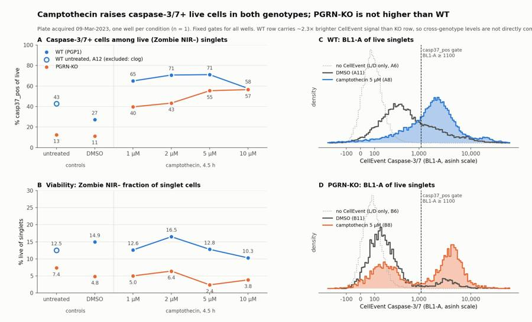
99
tool call · Bash
cd /task/work; python3 - <<'EOF'
s=open('fig.py').read()
s=s.replace(""" ax.axvline(al(1100),color=INK,lw=1,ls='--'); ax.text(al(1100),ax.get_ylim()[1]*0.97,' casp37_pos gate\\n BL1-A ≥ 1100',fontsize=8.5,color=SEC,va='top')""",
""" ax.set_ylim(0,ax.get_ylim()[1]*1.45)
ax.axvline(al(1100),color=INK,lw=1,ls='--'); ax.text(al(1100),ax.get_ylim()[1]*0.98,' casp37_pos gate\\n BL1-A ≥ 1100',fontsize=8.5,color=SEC,va='top')""")
s=s.replace("loc='upper left',bbox_to_anchor=(0.0,0.86))","loc='upper left',bbox_to_anchor=(0.0,1.0))")
s=s.replace("xytext=(0,9 if up else -15)","xytext=(0,9 if (up or y[i]<0.12*ymax) else -15)")
s=s.replace("up = (y[i] >= val[(ko if wells is wt else wt)[i]])","up = (y[i] >= val[(ko if wells is wt else wt)[i]]) or (i==2 and wells is ko and ymax<50)")
s=s.replace("Fixed gates for all wells. WT row carries","Fixed gates for all wells.\\nThe WT row carries")
s=s.replace("fig.text(0.07,0.905,","fig.text(0.07,0.895,")
s=s.replace("top=0.86,","top=0.84,")
open('fig.py','w').write(s)
EOF
python3 fig.py100
tool call · Read
{
"file_path": "/task/outputs/figure.png"
}101
tool output
(Bash completed with no output)
102
tool output
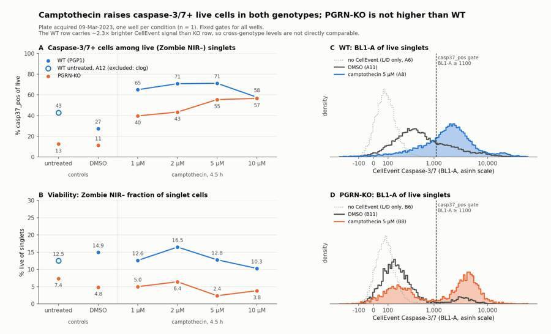
104
tool call · Bash
cd /task/work; cat > outputs.py <<'EOF'
import pandas as pd, numpy as np, json
OUT='/task/outputs/'
lay=pd.read_csv('/task/inputs/plate_layout.csv')
c=pd.read_csv(OUT+'counts.csv'); pv=c.pivot(index='well',columns='population',values='count')
D=pd.read_csv('diag.csv').set_index('well')
casp=100*pv.casp37_pos/pv.live; viab=100*pv.live/pv.singlets
# ---------- flags
special={
'A12':('clog','exclude',"Flow interrupted then surged: only 2,824 of 409,074 events (0.69%) arrived in the first 20 s of the 47 s acquisition (21 of 47 one-second bins below 50% of the well's median rate, several with 0 events), followed by a surge to 22,923 events/s (1.8x this well's median of 12,583/s and ~2.7x the ~8,300/s typical of row A). Readout unstable within the well: casp37_pos/live 38.2% at 20-28 s vs 45.5% at 28-47 s; singlets/cells 74.4% (lowest in row A with A10); FSC-A off-scale 1.42% of events."),
'A8':('other','keep_with_note',"Transient event-rate burst at 3.25-4.25 s: up to 3,933 events per 0.25 s vs ~2,150 baseline (1.8x), 1 s out of 47 s. Readout unaffected: casp37_pos/live 72.4% inside the 3-4.5 s window vs 71.1% outside; first vs second half of run 71.6% vs 70.6%."),
'B8':('other','keep_with_note',"Transient event-rate burst at 3.75-4.5 s: up to 5,434 events per 0.25 s vs ~2,800 baseline (1.9x). Readout unaffected: casp37_pos/live 54.4% inside the 3-4.5 s window vs 55.5% outside. Smallest live gate on the plate (3,366 events; live/singlets 2.39%), still adequate for a percentage."),
'B2':('other','keep_with_note',"Unstained KO control acquired immediately after the clogged, fully stained well A12: 47 singlet events fall in the dead (Zombie NIR+) gate with RL3-A up to 28,460, i.e. carry-over of about 0.03% of singlets (A2 unstained: 3 events). Negligible; control still valid. Unstained BL1-A autofluorescence puts 5.95% of all singlets above the 1,100 gate, but these are dead cells (L/D-only live cells: 0.19%)."),
}
rows=[]
for _,r in lay.iterrows():
w=r.well
if w in special: it,dec,ev=special[w]
else:
it,dec='none','keep'
ev=f"{int(D.loc[w,'n']):,} events at a steady {int(D.loc[w,'rate_med']):,} events/s for 47 s; casp37_pos/live first vs second half of run {D.loc[w,'casp_h1']:.1f}% vs {D.loc[w,'casp_h2']:.1f}%; live gate {int(pv.loc[w,'live']):,} events; FSC-A off-scale {D.loc[w,'fsc_sat%']:.2f}%."
if r.treatment in ('no stain','caspase only','L/D only'):
ev=f"Staining control behaves as labelled: median BL1-A of singlets-range events {int(D.loc[w,'live_BL1_med']):,}, live/singlets {viab[w]:.1f}%, casp37_pos/live {casp[w]:.2f}%; {int(D.loc[w,'n']):,} events at a steady {int(D.loc[w,'rate_med']):,} events/s."
rows.append(dict(file=r.file,well=w,issue_type=it,evidence=ev,decision=dec))
F=pd.DataFrame(rows); F.to_csv(OUT+'flags.csv',index=False)
excl=list(F[F.decision=='exclude'].well)
# ---------- condition summary
M1='100 * casp37_pos / live (count of casp37_pos divided by count of its parent live)'
M2='100 * live / singlets (count of live divided by count of its parent singlets)'
conds=[('WT_DMSO',['A11']),('WT_CPT_1uM',['A10']),('WT_CPT_2uM',['A9']),('WT_CPT_5uM',['A8']),('WT_CPT_10uM',['A7']),('WT_CPT_all_doses',['A10','A9','A8','A7']),
('KO_untreated',['B12']),('KO_DMSO',['B11']),('KO_baseline_DMSO_and_untreated',['B11','B12']),('KO_CPT_1uM',['B10']),('KO_CPT_2uM',['B9']),('KO_CPT_5uM',['B8']),('KO_CPT_10uM',['B7']),('KO_CPT_all_doses',['B10','B9','B8','B7']),
('WT_LD_only_stain_control',['A6']),('KO_LD_only_stain_control',['B6'])]
S=[]
def add(name,wells,vals,md,norm):
vals=np.asarray(vals,float)
S.append(dict(condition=name,wells=';'.join(wells),n_wells_used=len(wells),mean=round(vals.mean(),3),sd=(round(vals.std(ddof=1),3) if len(wells)>1 else ''),metric_definition=md,normalisation_applied=norm))
for n,w in conds: add(n,w,casp[w],M1,'none')
for n,w in conds: add(n+'__viability',w,viab[w],M2,'none')
add('WT_CPT_all_doses__fold_vs_DMSO',['A10','A9','A8','A7'],casp[['A10','A9','A8','A7']]/casp['A11'],M1,'(100 * casp37_pos / live of each well) / (100 * casp37_pos / live of well A11, WT DMSO)')
add('KO_CPT_all_doses__fold_vs_DMSO',['B10','B9','B8','B7'],casp[['B10','B9','B8','B7']]/casp['B11'],M1,'(100 * casp37_pos / live of each well) / (100 * casp37_pos / live of well B11, KO DMSO)')
S=pd.DataFrame(S); S.to_csv(OUT+'condition_summary.csv',index=False)
print(S[['condition','wells','n_wells_used','mean','sd']].to_string())
m=S.set_index('condition')['mean']; sd=S.set_index('condition')['sd']
# ---------- answer
ans={
"question":"Is there a difference in caspase-3/7 activity in PGRN-KO iPSC-derived neurons compared with WT (PGP1) neurons, with and without camptothecin, and does the CellEvent Caspase-3/7 / Zombie NIR flow assay work well enough to measure it?",
"comparisons":[
{"comparison":"Genotype effect at baseline (vehicle): KO DMSO vs WT DMSO, % caspase-3/7+ of live cells","a":"WT_DMSO","b":"KO_DMSO","direction":"no_clear_change",
"magnitude":f"With the fixed gate KO is lower, {m['KO_DMSO']:.1f}% vs {m['WT_DMSO']:.1f}% (n=1 well each), but the WT row carries 2.3x brighter CellEvent signal; with the WT gate scaled by 2.3x WT is 12.8%, i.e. equal to KO. Sign and size depend on gate handling; KO is not higher than WT under any gate tested.","confidence":"low"},
{"comparison":"Genotype effect under camptothecin (1-10 uM pooled): KO vs WT, % caspase-3/7+ of live cells","a":"WT_CPT_all_doses","b":"KO_CPT_all_doses","direction":"no_clear_change",
"magnitude":f"Fixed gate: KO {m['KO_CPT_all_doses']:.1f}% (SD {sd['KO_CPT_all_doses']:.1f}) vs WT {m['WT_CPT_all_doses']:.1f}% (SD {sd['WT_CPT_all_doses']:.1f}), 4 dose wells each; with the WT gate scaled 2.3x WT falls to 34.4%, and at a BL1-A gate of 2,000 the two are 44.5% vs 44.9%. Not a robust difference.","confidence":"low"},
{"comparison":"Camptothecin effect in WT (positive control): CPT 1-10 uM vs DMSO","a":"WT_DMSO","b":"WT_CPT_all_doses","direction":"inc
… [5,182 more characters not shown]105
tool output
condition wells n_wells_used mean sd
0 WT_DMSO A11 1 27.237
1 WT_CPT_1uM A10 1 64.982
2 WT_CPT_2uM A9 1 70.783
3 WT_CPT_5uM A8 1 71.150
4 WT_CPT_10uM A7 1 57.724
5 WT_CPT_all_doses A10;A9;A8;A7 4 66.160 6.293
6 KO_untreated B12 1 12.525
7 KO_DMSO B11 1 11.149
8 KO_baseline_DMSO_and_untreated B11;B12 2 11.837 0.973
9 KO_CPT_1uM B10 1 39.696
10 KO_CPT_2uM B9 1 43.372
11 KO_CPT_5uM B8 1 55.466
12 KO_CPT_10uM B7 1 56.549
13 KO_CPT_all_doses B10;B9;B8;B7 4 48.771 8.502
14 WT_LD_only_stain_control A6 1 0.212
15 KO_LD_only_stain_control B6 1 0.190
16 WT_DMSO__viability A11 1 14.948
17 WT_CPT_1uM__viability A10 1 12.617
18 WT_CPT_2uM__viability A9 1 16.487
19 WT_CPT_5uM__viability A8 1 12.786
20 WT_CPT_10uM__viability A7 1 10.291
21 WT_CPT_all_doses__viability A10;A9;A8;A7 4 13.046 2.561
22 KO_untreated__viability B12 1 7.360
23 KO_DMSO__viability B11 1 4.843
24 KO_baseline_DMSO_and_untreated__viability B11;B12 2 6.102 1.78
25 KO_CPT_1uM__viability B10 1 5.019
26 KO_CPT_2uM__viability B9 1 6.422
27 KO_CPT_5uM__viability B8 1 2.388
28 KO_CPT_10uM__viability B7 1 3.840
29 KO_CPT_all_doses__viability B10;B9;B8;B7 4 4.417 1.716
30 WT_LD_only_stain_control__viability A6 1 11.576
31 KO_LD_only_stain_control__viability B6 1 7.718
32 WT_CPT_all_doses__fold_vs_DMSO A10;A9;A8;A7 4 2.429 0.231
33 KO_CPT_all_doses__fold_vs_DMSO B10;B9;B8;B7 4 4.374 0.763
['A12']
count 18.000000
mean 59.454929
std 5.935249
min 51.631979
25% 54.381418
50% 58.307450
75% 65.449670
max 68.152908
dtype: float64
casp_bl2000 casp_bl800 all_sing_casp% dead_casp%
well
A2 0.045340 4.046380 1.293267 NaN
A4 84.038654 90.774161 88.620107 100.000000
A6 0.103158 0.338128 1.361329 1.607472
A7 37.415487 65.729047 94.594258 99.799107
A8 48.605106 78.325098 95.594430 99.886484
A9 48.537610 78.037419 94.247331 99.841602
A10 43.397840 72.916292 94.574828 99.807131
A11 16.439767 34.755934 85.900766 99.437551
A12 30.763384 48.729504 90.298462 99.327183
B2 0.395623 10.605511 5.964866 69.230769
B4 89.896243 95.779028 94.867214 100.000000
B6 0.042203 0.411479 2.533223 2.873070
B7 53.270869 57.410562 96.438523 99.243246
B8 50.653595 57.189542 97.207306 99.105294
B9 40.164632 44.550099 92.859161 98.790675
B10 35.478917 41.580564 94.092543 98.957353
B11 9.633524 12.092160 91.567122 98.496463
B12 10.402524 13.815852 89.284533 98.695405107
agent
Deliverable tables and `answer.json` are written; finishing with the report and a final validation pass of all files.
108
tool call · Bash
cd /task/work; sed -i 's/median BL1-A of singlets-range events/median BL1-A in the live gate/' outputs.py && python3 outputs.py >/dev/null && cat > /task/outputs/report.md <<'EOF' # Caspase-3/7 assay in WT vs PGRN-KO iPSC-derived neurons (plate acquired 09-Mar-2023) ## Question Is caspase-3/7 activity different in PGRN-KO iPSC-derived neurons compared with WT (PGP1) neurons, with and without a 4.5 h camptothecin challenge (1–10 µM)? This was the first optimisation run, so the second question is whether the CellEvent Caspase-3/7 + Zombie NIR flow assay works well enough to measure such a difference. ## Methods **Data.** 18 FCS files (Attune NxT), one well per sample: for each genotype, unstained, CellEvent only, Zombie only, camptothecin 10/5/2/1 µM, DMSO, and no treatment. Detectors: BL1-A = CellEvent Caspase-3/7, RL3-A = Zombie NIR. The file spillover matrix is identity (two dyes on separate lasers), so all gates are uncompensated. **Gating.** One strategy for all wells, saved in `gates.xml`; `counts.csv` is produced by re-loading that file. | Population | Parent | Role | Gate | |---|---|---|---| | `cells` | all_events | cells | Polygon on FSC-A × SSC-A; FSC-A 130k–600k, excluding debris and off-scale aggregates | | `singlets` | cells | singlets | Polygon on FSC-A × FSC-W around the main width band | | `live` | singlets | live | RL3-A < 500 (Zombie NIR negative) | | `dead` | singlets | other | RL3-A ≥ 500 | | `casp37_pos` | live | marker_positive | BL1-A ≥ 1,100 | - The 130k FSC-A lower bound is the valley between debris and intact Zombie-negative cells. - The Zombie cut sits above the no-Zombie controls (99.99th percentile of RL3-A ≈ 280–320). - The CellEvent cut is the valley of the bimodal KO live-cell distributions. It leaves 0.21 % (WT) and 0.19 % (KO) of live cells positive in the Zombie-only wells. **Readout.** Primary: % `casp37_pos` of `live`, i.e. caspase-3/7-active cells with an intact membrane. Secondary: % `live` of `singlets` (viability). Fold change is each camptothecin well divided by the same genotype's DMSO well. **QC.** Event rate over time, off-scale events, control behaviour, and first-half versus second-half agreement of the readout within each well. ## Results **Well QC.** 17 of 18 wells are usable. | Well | Issue | Decision | |---|---|---| | A12 (WT no treatment) | Clog: 0.69 % of events in the first 20 s, then a surge to 22,923 events/s; readout 38.2 % at 20–28 s vs 45.5 % at 28–47 s | Exclude | | A8, B8 | 1 s event-rate burst at ~3.5 s (1.8–1.9× baseline); readout the same inside and outside the burst | Keep with note | | B2 (KO unstained) | 47 Zombie-positive events carried over from A12 (0.03 % of singlets) | Keep with note | In the other wells the readout differed by at most 1.5 points between the first and second half of the run. Staining controls match their labels. **Caspase-3/7+ of live cells and viability** (n = 1 well per condition): | Treatment | WT % casp37_pos of live | KO % casp37_pos of live | WT % live of singlets | KO % live of singlets | |---|---|---|---|---| | No treatment | excluded (A12) | 12.5 | excluded | 7.4 | | DMSO | 27.2 | 11.1 | 14.9 | 4.8 | | Camptothecin 1 µM | 65.0 | 39.7 | 12.6 | 5.0 | | Camptothecin 2 µM | 70.8 | 43.4 | 16.5 | 6.4 | | Camptothecin 5 µM | 71.2 | 55.5 | 12.8 | 2.4 | | Camptothecin 10 µM | 57.7 | 56.5 | 10.3 | 3.8 | | Camptothecin, mean ± SD of 4 doses | 66.2 ± 6.3 | 48.8 ± 8.5 | 13.0 ± 2.6 | 4.4 ± 1.7 | | Fold vs DMSO, mean ± SD of 4 doses | 2.4 ± 0.2 | 4.4 ± 0.8 | – | – | **Camptothecin response.** - Camptothecin raised caspase-3/7+ live cells at every dose in both genotypes: +39 points in WT and +38 points in KO. - KO rises with dose (39.7 → 56.5 % from 1 to 10 µM). WT is already at its plateau at 1 µM. - KO live cells split into two clean populations (figure panel D). WT live cells shift as one broad population that the gate cuts through (panel C). **WT versus KO.** - With the fixed gate, KO is lower than WT: 11.1 % vs 27.2 % in DMSO, and 48.8 % vs 66.2 % under camptothecin. - This difference is not robust. The whole WT row is about 2.3× brighter in CellEvent than the KO row (dead-cell BL1-A median 7,738 vs 3,339 in the DMSO wells; 6,184 vs 3,477 in the CellEvent-only wells). - Scaling the WT gate by 2.3× gives WT 12.8 % in DMSO and 34.4 % under camptothecin, i.e. baseline equal to KO. - At a BL1-A gate of 2,000 the camptothecin means are 44.5 % (WT) and 44.9 % (KO). - KO was not higher than WT at baseline under any gate tested. **Viability.** KO is lower than WT in all six matched stained pairs (KO 2.4–7.7 %, WT 10.3–16.5 %), 3.1-fold lower in DMSO. Camptothecin did not clearly change viability within 4.5 h. **Sample quality.** - 52–68 % of all events are debris outside the `cells` gate. - 84–98 % of singlet cells are Zombie-positive, including in untreated wells. - 98.5–99.9 % of dead cells are CellEvent-bright, so caspase+ of all cells is 86–97 % in every stained well and carries no information. This is why the readout is restricted to live cells. **Gate sensitivity.** Moving the Zombie cut between 300 and 1,000 changes the readout by at most about 3 points. Moving the CellEvent cut between 800 and 2,000 changes KO DMSO only from 12.1 % to 9.6 %, but WT DMSO from 34.8 % to 16.4 %. ## Conclusion **No:** this plate does not show higher caspase-3/7 activity in PGRN-KO than in WT neurons. KO is lower with a fixed gate and about equal once the brighter staining of the WT row is allowed for. That comparison rests on one well per condition and is confounded with plate row, so it is not conclusive in either direction. The assay itself detects induced caspase activity: camptothecin gives a 2.4-fold (WT) and 4.4-fold (KO) increase in caspase-3/7+ live cells. KO viability is consistently lower than WT, which fits the expected poorer health of KO neurons but carries the same confound. Assay verdict: **needs optimisation** before it can be used for the genotype or rescue comparison. ## Caveats - … [3,906 more characters not shown]
109
tool output
count mismatches 0 rows 108 per file [6]
role
cells [cells]
live [live]
marker_positive [casp37_pos]
other [all_events, dead]
singlets [singlets]
Name: population, dtype: object
(18, 5) {'none': 14, 'other': 3, 'clog': 1} {'keep': 14, 'keep_with_note': 3, 'exclude': 1} 0
repeat_with_change needs_optimisation no:
6 ['## Question\n', '## Methods\n', '## Results\n', '## Conclusion\n', '## Caveats\n', '## Recommendation\n']
['answer.json', 'condition_summary.csv', 'counts.csv', 'figure.png', 'flags.csv', 'gates.xml', 'report.md']111
agent
The plate does not show higher caspase-3/7 activity in PGRN-KO than in WT neurons. The assay itself responds to camptothecin in both genotypes, but the genotype comparison is not conclusive in either direction. All seven deliverables are written, and the counts reproduce exactly when the saved gates are re-applied to the raw files.
## Main result
Readout: % caspase-3/7+ of live (Zombie NIR-negative) singlet cells, one well per condition.
| Treatment | WT | KO |
|---|---|---|
| No treatment | excluded (A12) | 12.5 |
| DMSO | 27.2 | 11.1 |
| Camptothecin 1 µM | 65.0 | 39.7 |
| Camptothecin 2 µM | 70.8 | 43.4 |
| Camptothecin 5 µM | 71.2 | 55.5 |
| Camptothecin 10 µM | 57.7 | 56.5 |
- **Camptothecin works as a positive control.** It raised caspase-3/7+ live cells about 2.4-fold in WT and 4.4-fold in KO. KO rises with dose; WT is already at plateau at 1 µM.
- **KO is not higher than WT.** With one fixed gate KO is lower (11.1 % vs 27.2 % in DMSO).
- **That difference is not robust.** The whole WT row is about 2.3× brighter in CellEvent than the KO row; scaling the WT gate by that factor gives 12.8 % vs 11.1 %. I therefore called the genotype comparisons "no clear change" with low confidence.
- **KO viability is lower.** In DMSO, 4.8 % of KO singlets are live versus 14.9 % of WT, and KO is lower in all six matched pairs. This carries the same row confound.
## Wells flagged
- **A12 (WT no treatment), excluded as a clog.** Only 0.69 % of its events arrived in the first 20 s, followed by a surge to about 22,900 events/s. This leaves DMSO (A11) as the only WT control.
- **A8, B8 and B2, kept with a note.** A8 and B8 have a one-second event-rate burst that does not change the readout; B2 has trace carry-over from A12 (47 events).
## Things that limit the conclusion
- There is one well per genotype × treatment, so there is no estimate of well-to-well variation.
- Genotype is confounded with row: WT and KO were processed separately and acquired one row after the other.
- Viability is very low everywhere: 84–98 % of singlet cells are Zombie-positive, and nearly all dead cells are CellEvent-bright. The readout therefore describes a small surviving subset.
## Recommendation
I gave the assay verdict as "needs optimisation" and the next action as "repeat with change". The change is the plate design: three replicate wells per genotype × treatment (DMSO, 1 µM and 10 µM), with WT and KO alternated, stained from one master mix and acquired interleaved.
A gentler harvest to raise viability was the other candidate for the single change. I ranked it second because replication is needed whatever the viability; say if you would rather lead with the harvest.
Files are in `/task/outputs/`:
- `gates.xml`
- `counts.csv`
- `flags.csv`
- `condition_summary.csv`
- `figure.png`
- `report.md`
- `answer.json`
final result
The plate does not show higher caspase-3/7 activity in PGRN-KO than in WT neurons. The assay itself responds to camptothecin in both genotypes, but the genotype comparison is not conclusive in either direction. All seven deliverables are written, and the counts reproduce exactly when the saved gates are re-applied to the raw files. ## Main result Readout: % caspase-3/7+ of live (Zombie NIR-negative) singlet cells, one well per condition. | Treatment | WT | KO | |---|---|---| | No treatment | excluded (A12) | 12.5 | | DMSO | 27.2 | 11.1 | | Camptothecin 1 µM | 65.0 | 39.7 | | Camptothecin 2 µM | 70.8 | 43.4 | | Camptothecin 5 µM | 71.2 | 55.5 | | Camptothecin 10 µM | 57.7 | 56.5 | - **Camptothecin works as a positive control.** It raised caspase-3/7+ live cells about 2.4-fold in WT and 4.4-fold in KO. KO rises with dose; WT is already at plateau at 1 µM. - **KO is not higher than WT.** With one fixed gate KO is lower (11.1 % vs 27.2 % in DMSO). - **That difference is not robust.** The whole WT row is about 2.3× brighter in CellEvent than the KO row; scaling the WT gate by that factor gives 12.8 % vs 11.1 %. I therefore called the genotype comparisons "no clear change" with low confidence. - **KO viability is lower.** In DMSO, 4.8 % of KO singlets are live versus 14.9 % of WT, and KO is lower in all six matched pairs. This carries the same row confound. ## Wells flagged - **A12 (WT no treatment), excluded as a clog.** Only 0.69 % of its events arrived in the first 20 s, followed by a surge to about 22,900 events/s. This leaves DMSO (A11) as the only WT control. - **A8, B8 and B2, kept with a note.** A8 and B8 have a one-second event-rate burst that does not change the readout; B2 has trace carry-over from A12 (47 events). ## Things that limit the conclusion - There is one well per genotype × treatment, so there is no estimate of well-to-well variation. - Genotype is confounded with row: WT and KO were processed separately and acquired one row after the other. - Viability is very low everywhere: 84–98 % of singlet cells are Zombie-positive, and nearly all dead cells are CellEvent-bright. The readout therefore describes a small surviving subset. ## Recommendation I gave the assay verdict as "needs optimisation" and the next action as "repeat with change". The change is the plate design: three replicate wells per genotype × treatment (DMSO, 1 µM and 10 µM), with WT and KO alternated, stained from one master mix and acquired interleaved. A gentler harvest to raise viability was the other candidate for the single change. I ranked it second because replication is needed whatever the viability; say if you would rather lead with the harvest. Files are in `/task/outputs/`: - `gates.xml` - `counts.csv` - `flags.csv` - `condition_summary.csv` - `figure.png` - `report.md` - `answer.json`